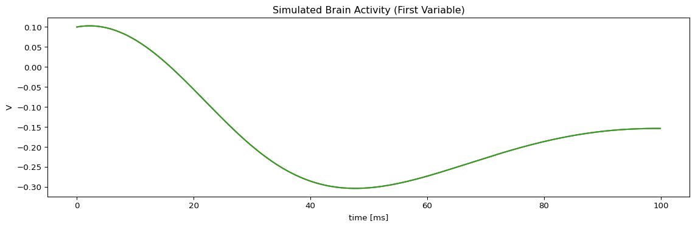

import os
import json
import numpy as np
# Import TVB-O components
from tvbo import Coupling
from tvbo.classes.noise import Integrator
from tvbo import Network,SimulationExperiment,DynamicsBIDS Export for TVB Simulations
Brain Imaging Data Structure (BEP034 v1.0.0) Integration
Introduction
This notebook demonstrates how to export simulation results from The Virtual Brain (TVB) to the Brain Imaging Data Structure (BIDS) format, specifically following the BEP034 Computational Modeling Extension v1.0.0.
What is BIDS?
The Brain Imaging Data Structure (BIDS) is a standard for organizing and describing neuroimaging data. It provides:
- Standardized file naming conventions
- JSON sidecar files for metadata
- Interoperability across neuroimaging tools
- Reproducibility of analyses
BEP034: Computational Modeling Extension
BEP034 extends BIDS to support computational modeling data with a specific directory structure:
net/: Network connectivity files (weights, distances)ts/: Simulated time series dataeq/: Model equations (tvbo format)coord/: Region coordinatesmap/: Mapping filescode/: Analysis code
Key features: - File naming with id-<hash> suffix based on JSON sidecar hash - Proper entity-value pairs in filenames - Full provenance tracking
For more information, see: - BIDS Specification - BEP034 Computational Modeling
Setup
Create a Simulation Experiment
First, let’s set up a simulation experiment using the Wilson-Cowan model with a sample connectome.
from tvbo.datamodel.schema import CouplingInput, Parameter
# | label: create-experiment
# Load a sample connectome
connectome = Network(number_of_nodes=3)
# Define the dynamics model
dynamics = Dynamics.from_ontology("Generic2dOscillator")
dynamics.coupling_inputs['c_glob'] = CouplingInput(name='c_glob')
dynamics.coupling_terms['c_glob'] = Parameter(name='c_glob')
# Define coupling function
coupling = Coupling.from_ontology('Linear')
# Create the simulation experiment
experiment = SimulationExperiment(
label="BIDS Demo Simulation",
description="Example simulation for BIDS export demonstration",
dynamics=dynamics,
coupling=coupling,
network=connectome,
integration=Integrator(
method="Euler",
step_size=0.1,
duration=100.0,
),
)Run the Simulation
ts = experiment.run(format="pyrates")
print(f"TimeSeries shape: {ts.shape}")
print(f"Time points: {len(ts.time)}")
print(f"State variables: {ts.variables_labels}")
print(f"Sample period: {ts.sample_period} {ts.sample_period_unit}")Compilation Progress
--------------------
(1) Translating the circuit template into a networkx graph representation...
...finished.
(2) Preprocessing edge transmission operations...
...finished.
(3) Parsing the model equations into a compute graph...
...finished.
Model compilation was finished.
Simulation Progress
-------------------
(1) Generating the network run function...
(2) Processing output variables...
...finished.
(3) Running the simulation...
...finished after 0.01357958399967174s.
TimeSeries shape: (1000, 2, 3)
Time points: 1000
State variables: ['V' 'W']
Sample period: 0.1 msVisualize Results
import matplotlib.pyplot as plt
# Plot time series for a few regions
fig, ax = plt.subplots(figsize=(12, 4))
ts.get_state_variable('V').plot(ax=ax)
ax.set_title("Simulated Brain Activity (First Variable)")
plt.tight_layout()
plt.show()
Export to BIDS Format (BEP034)
Now we’ll export the simulation results to BIDS format. The to_bids() method creates a complete BIDS-compliant dataset structure following BEP034 v1.0.0.
Output Formats
Three formats are supported for time series data:
| Format | Extension | Splits by State | Use Case |
|---|---|---|---|
cifti (default) |
.ptseries.nii |
Yes | Neuroimaging tools, named parcels |
tsv |
.tsv |
Yes | Simple tabular data |
h5 |
.h5 |
No | Full dimensionality, parameter sweeps |
Method 1: Export via TimeSeries
# Use the derivatives folder for BIDS output
bids_output = os.path.join(os.path.dirname(__file__) if '__file__' in dir() else '.', 'derivatives', 'tvbo')
os.makedirs(bids_output, exist_ok=True)
# Export using the TimeSeries to_bids method
# The ts entity (ts-V, ts-W) comes from state variable names automatically
# suffix='State' means raw neural state (default), use 'BOLD' for fMRI observation
output_path = ts.to_bids(
output_dir=bids_output,
subject="01",
session="simulation",
description="wilsoncowan",
run=1,
suffix="State", # 'State' for raw, 'BOLD' for fMRI, 'EEG' for EEG
experiment=experiment, # Include experiment for full provenance
)
print(f"BIDS dataset created at: {output_path}")BIDS dataset created at: ./derivatives/tvboMethod 1b: Export as HDF5 (preserving full dimensions)
For data with multiple dimensions (e.g., parameter sweeps, modes), use HDF5:
# HDF5 preserves full dimensionality without splitting by state variable
# Ideal for: (sweep, time, state, region, mode) or other multi-dimensional data
output_path_h5 = ts.to_bids(
output_dir=bids_output,
subject="01",
timeseries_format="h5", # Keep all dimensions intact
experiment=experiment,
)Method 2: Export via SimulationExperiment
Alternatively, you can export directly from the experiment (which will run the simulation if needed):
# Use derivatives folder for experiment export
bids_output2 = os.path.join(os.path.dirname(__file__) if '__file__' in dir() else '.', 'derivatives', 'tvbo_experiment')
os.makedirs(bids_output2, exist_ok=True)
# Export using the experiment's to_bids method
output_path2 = experiment.to_bids(
output_dir=bids_output2,
subject="02",
description="simulation",
timeseries=ts, # Use pre-computed timeseries
)
print(f"BIDS dataset created at: {output_path2}")BIDS dataset created at: ./derivatives/tvbo_experimentInspect the BEP034 Structure
Let’s examine the created BIDS dataset structure. BEP034 organizes data into specific directories:
def print_tree(path, prefix=""):
"""Print directory tree structure."""
entries = sorted(os.listdir(path))
for i, entry in enumerate(entries):
is_last = i == len(entries) - 1
current_prefix = "└── " if is_last else "├── "
print(f"{prefix}{current_prefix}{entry}")
entry_path = os.path.join(path, entry)
if os.path.isdir(entry_path):
next_prefix = prefix + (" " if is_last else "│ ")
print_tree(entry_path, next_prefix)
print("BIDS Dataset Structure (BEP034 v1.0.0):")
print("=" * 50)
print_tree(bids_output)BIDS Dataset Structure (BEP034 v1.0.0):
==================================================
├── dataset_description.json
├── participants.tsv
└── sub-01
├── eq
│ ├── eq-dynamics_desc-dynamics_id-04f3a853.json
│ ├── eq-dynamics_desc-dynamics_id-0e487eb5.json
│ ├── eq-dynamics_desc-dynamics_id-181c188c.json
│ ├── eq-dynamics_desc-dynamics_id-2590be0a.json
│ ├── eq-dynamics_desc-dynamics_id-275236ee.json
│ ├── eq-dynamics_desc-dynamics_id-315936a4.json
│ ├── eq-dynamics_desc-dynamics_id-333e9fcd.json
│ ├── eq-dynamics_desc-dynamics_id-44924dcf.json
│ ├── eq-dynamics_desc-dynamics_id-4830b3d6.json
│ ├── eq-dynamics_desc-dynamics_id-6638a397.json
│ ├── eq-dynamics_desc-dynamics_id-6a2926f6.json
│ ├── eq-dynamics_desc-dynamics_id-6c4d1005.json
│ ├── eq-dynamics_desc-dynamics_id-6d63797f.json
│ ├── eq-dynamics_desc-dynamics_id-71306f85.json
│ ├── eq-dynamics_desc-dynamics_id-766abece.json
│ ├── eq-dynamics_desc-dynamics_id-80676839.json
│ ├── eq-dynamics_desc-dynamics_id-8098f0c2.json
│ ├── eq-dynamics_desc-dynamics_id-8d1a13ba.json
│ ├── eq-dynamics_desc-dynamics_id-9b7864b6.json
│ ├── eq-dynamics_desc-dynamics_id-9f3721f4.json
│ ├── eq-dynamics_desc-dynamics_id-b917debf.json
│ ├── eq-dynamics_desc-dynamics_id-b941b8ff.json
│ ├── eq-dynamics_desc-dynamics_id-bc668539.json
│ ├── eq-dynamics_desc-dynamics_id-be77bca1.json
│ ├── eq-dynamics_desc-dynamics_id-c2db8ae9.json
│ ├── eq-dynamics_desc-dynamics_id-c3860b72.json
│ ├── eq-dynamics_desc-dynamics_id-c8b6c602.json
│ ├── eq-dynamics_desc-dynamics_id-caddfef2.json
│ ├── eq-dynamics_desc-dynamics_id-ccb91567.json
│ ├── eq-dynamics_desc-dynamics_id-d50caf3f.json
│ ├── eq-dynamics_desc-dynamics_id-f7e84a52.json
│ └── eq-dynamics_desc-dynamics_id-fbe09d86.json
├── net
│ ├── sub-01_desc-dynamics_net-distances_id-04443ce7.json
│ ├── sub-01_desc-dynamics_net-distances_id-04443ce7.tsv
│ ├── sub-01_desc-dynamics_net-distances_id-15a17e77.json
│ ├── sub-01_desc-dynamics_net-distances_id-15a17e77.tsv
│ ├── sub-01_desc-dynamics_net-distances_id-17faaf0a.json
│ ├── sub-01_desc-dynamics_net-distances_id-17faaf0a.tsv
│ ├── sub-01_desc-dynamics_net-distances_id-21989e10.json
│ ├── sub-01_desc-dynamics_net-distances_id-21989e10.tsv
│ ├── sub-01_desc-dynamics_net-distances_id-2b4b6e49.json
│ ├── sub-01_desc-dynamics_net-distances_id-2b4b6e49.tsv
│ ├── sub-01_desc-dynamics_net-distances_id-310bd292.json
│ ├── sub-01_desc-dynamics_net-distances_id-310bd292.tsv
│ ├── sub-01_desc-dynamics_net-distances_id-31956948.json
│ ├── sub-01_desc-dynamics_net-distances_id-31956948.tsv
│ ├── sub-01_desc-dynamics_net-distances_id-4503d552.json
│ ├── sub-01_desc-dynamics_net-distances_id-4503d552.tsv
│ ├── sub-01_desc-dynamics_net-distances_id-4875ef73.json
│ ├── sub-01_desc-dynamics_net-distances_id-4875ef73.tsv
│ ├── sub-01_desc-dynamics_net-distances_id-54e20f15.json
│ ├── sub-01_desc-dynamics_net-distances_id-54e20f15.tsv
│ ├── sub-01_desc-dynamics_net-distances_id-5acbc0ba.json
│ ├── sub-01_desc-dynamics_net-distances_id-5acbc0ba.tsv
│ ├── sub-01_desc-dynamics_net-distances_id-68b768fb.json
│ ├── sub-01_desc-dynamics_net-distances_id-68b768fb.tsv
│ ├── sub-01_desc-dynamics_net-distances_id-6af9eea9.json
│ ├── sub-01_desc-dynamics_net-distances_id-6af9eea9.tsv
│ ├── sub-01_desc-dynamics_net-distances_id-774eb760.json
│ ├── sub-01_desc-dynamics_net-distances_id-774eb760.tsv
│ ├── sub-01_desc-dynamics_net-distances_id-8ad3045e.json
│ ├── sub-01_desc-dynamics_net-distances_id-8ad3045e.tsv
│ ├── sub-01_desc-dynamics_net-distances_id-91758976.json
│ ├── sub-01_desc-dynamics_net-distances_id-91758976.tsv
│ ├── sub-01_desc-dynamics_net-distances_id-92073af8.json
│ ├── sub-01_desc-dynamics_net-distances_id-92073af8.tsv
│ ├── sub-01_desc-dynamics_net-distances_id-94eefc92.json
│ ├── sub-01_desc-dynamics_net-distances_id-94eefc92.tsv
│ ├── sub-01_desc-dynamics_net-distances_id-9cc9aa47.json
│ ├── sub-01_desc-dynamics_net-distances_id-9cc9aa47.tsv
│ ├── sub-01_desc-dynamics_net-distances_id-c0c52e53.json
│ ├── sub-01_desc-dynamics_net-distances_id-c0c52e53.tsv
│ ├── sub-01_desc-dynamics_net-distances_id-c1cb9109.json
│ ├── sub-01_desc-dynamics_net-distances_id-c1cb9109.tsv
│ ├── sub-01_desc-dynamics_net-distances_id-c1cc3361.json
│ ├── sub-01_desc-dynamics_net-distances_id-c1cc3361.tsv
│ ├── sub-01_desc-dynamics_net-distances_id-d66238a3.json
│ ├── sub-01_desc-dynamics_net-distances_id-d66238a3.tsv
│ ├── sub-01_desc-dynamics_net-distances_id-d7dc5d1a.json
│ ├── sub-01_desc-dynamics_net-distances_id-d7dc5d1a.tsv
│ ├── sub-01_desc-dynamics_net-distances_id-dc6ec676.json
│ ├── sub-01_desc-dynamics_net-distances_id-dc6ec676.tsv
│ ├── sub-01_desc-dynamics_net-distances_id-deb16f2b.json
│ ├── sub-01_desc-dynamics_net-distances_id-deb16f2b.tsv
│ ├── sub-01_desc-dynamics_net-distances_id-e1440ed7.json
│ ├── sub-01_desc-dynamics_net-distances_id-e1440ed7.tsv
│ ├── sub-01_desc-dynamics_net-distances_id-e2f8f44c.json
│ ├── sub-01_desc-dynamics_net-distances_id-e2f8f44c.tsv
│ ├── sub-01_desc-dynamics_net-distances_id-f504f474.json
│ ├── sub-01_desc-dynamics_net-distances_id-f504f474.tsv
│ ├── sub-01_desc-dynamics_net-distances_id-f8e194a6.json
│ ├── sub-01_desc-dynamics_net-distances_id-f8e194a6.tsv
│ ├── sub-01_desc-dynamics_net-distances_id-fb4d474a.json
│ ├── sub-01_desc-dynamics_net-distances_id-fb4d474a.tsv
│ ├── sub-01_desc-dynamics_net-weights_id-07549a27.json
│ ├── sub-01_desc-dynamics_net-weights_id-07549a27.tsv
│ ├── sub-01_desc-dynamics_net-weights_id-14f9d079.json
│ ├── sub-01_desc-dynamics_net-weights_id-14f9d079.tsv
│ ├── sub-01_desc-dynamics_net-weights_id-188e5eab.json
│ ├── sub-01_desc-dynamics_net-weights_id-188e5eab.tsv
│ ├── sub-01_desc-dynamics_net-weights_id-24684668.json
│ ├── sub-01_desc-dynamics_net-weights_id-24684668.tsv
│ ├── sub-01_desc-dynamics_net-weights_id-276fcd42.json
│ ├── sub-01_desc-dynamics_net-weights_id-276fcd42.tsv
│ ├── sub-01_desc-dynamics_net-weights_id-29a9db1d.json
│ ├── sub-01_desc-dynamics_net-weights_id-29a9db1d.tsv
│ ├── sub-01_desc-dynamics_net-weights_id-2ddef1a9.json
│ ├── sub-01_desc-dynamics_net-weights_id-2ddef1a9.tsv
│ ├── sub-01_desc-dynamics_net-weights_id-30da98b2.json
│ ├── sub-01_desc-dynamics_net-weights_id-30da98b2.tsv
│ ├── sub-01_desc-dynamics_net-weights_id-3115eb53.json
│ ├── sub-01_desc-dynamics_net-weights_id-3115eb53.tsv
│ ├── sub-01_desc-dynamics_net-weights_id-32355b2e.json
│ ├── sub-01_desc-dynamics_net-weights_id-32355b2e.tsv
│ ├── sub-01_desc-dynamics_net-weights_id-3f4036bd.json
│ ├── sub-01_desc-dynamics_net-weights_id-3f4036bd.tsv
│ ├── sub-01_desc-dynamics_net-weights_id-4085f6c4.json
│ ├── sub-01_desc-dynamics_net-weights_id-4085f6c4.tsv
│ ├── sub-01_desc-dynamics_net-weights_id-4cb47303.json
│ ├── sub-01_desc-dynamics_net-weights_id-4cb47303.tsv
│ ├── sub-01_desc-dynamics_net-weights_id-58074be9.json
│ ├── sub-01_desc-dynamics_net-weights_id-58074be9.tsv
│ ├── sub-01_desc-dynamics_net-weights_id-5bbd0847.json
│ ├── sub-01_desc-dynamics_net-weights_id-5bbd0847.tsv
│ ├── sub-01_desc-dynamics_net-weights_id-5fcc649c.json
│ ├── sub-01_desc-dynamics_net-weights_id-5fcc649c.tsv
│ ├── sub-01_desc-dynamics_net-weights_id-6c3d1a04.json
│ ├── sub-01_desc-dynamics_net-weights_id-6c3d1a04.tsv
│ ├── sub-01_desc-dynamics_net-weights_id-73641fe4.json
│ ├── sub-01_desc-dynamics_net-weights_id-73641fe4.tsv
│ ├── sub-01_desc-dynamics_net-weights_id-793ce150.json
│ ├── sub-01_desc-dynamics_net-weights_id-793ce150.tsv
│ ├── sub-01_desc-dynamics_net-weights_id-7ac2f88e.json
│ ├── sub-01_desc-dynamics_net-weights_id-7ac2f88e.tsv
│ ├── sub-01_desc-dynamics_net-weights_id-7bfd3de6.json
│ ├── sub-01_desc-dynamics_net-weights_id-7bfd3de6.tsv
│ ├── sub-01_desc-dynamics_net-weights_id-86a2282e.json
│ ├── sub-01_desc-dynamics_net-weights_id-86a2282e.tsv
│ ├── sub-01_desc-dynamics_net-weights_id-8df6af86.json
│ ├── sub-01_desc-dynamics_net-weights_id-8df6af86.tsv
│ ├── sub-01_desc-dynamics_net-weights_id-9f1bac5a.json
│ ├── sub-01_desc-dynamics_net-weights_id-9f1bac5a.tsv
│ ├── sub-01_desc-dynamics_net-weights_id-aa951bcc.json
│ ├── sub-01_desc-dynamics_net-weights_id-aa951bcc.tsv
│ ├── sub-01_desc-dynamics_net-weights_id-d2dbab05.json
│ ├── sub-01_desc-dynamics_net-weights_id-d2dbab05.tsv
│ ├── sub-01_desc-dynamics_net-weights_id-d5bb8eda.json
│ ├── sub-01_desc-dynamics_net-weights_id-d5bb8eda.tsv
│ ├── sub-01_desc-dynamics_net-weights_id-e8ea2ff4.json
│ ├── sub-01_desc-dynamics_net-weights_id-e8ea2ff4.tsv
│ ├── sub-01_desc-dynamics_net-weights_id-eb4fe977.json
│ ├── sub-01_desc-dynamics_net-weights_id-eb4fe977.tsv
│ ├── sub-01_desc-dynamics_net-weights_id-f5a9ad41.json
│ ├── sub-01_desc-dynamics_net-weights_id-f5a9ad41.tsv
│ ├── sub-01_desc-dynamics_net-weights_id-fd495e36.json
│ └── sub-01_desc-dynamics_net-weights_id-fd495e36.tsv
├── ses-simulation
│ ├── eq
│ │ ├── eq-dynamics_desc-wilsoncowan_id-1d8cfee0.json
│ │ ├── eq-dynamics_desc-wilsoncowan_id-1e620699.json
│ │ ├── eq-dynamics_desc-wilsoncowan_id-2708b6e5.json
│ │ ├── eq-dynamics_desc-wilsoncowan_id-31964045.json
│ │ ├── eq-dynamics_desc-wilsoncowan_id-329a9611.json
│ │ ├── eq-dynamics_desc-wilsoncowan_id-3d0cac17.json
│ │ ├── eq-dynamics_desc-wilsoncowan_id-43e2687c.json
│ │ ├── eq-dynamics_desc-wilsoncowan_id-50e83602.json
│ │ ├── eq-dynamics_desc-wilsoncowan_id-51f747bd.json
│ │ ├── eq-dynamics_desc-wilsoncowan_id-5bea9395.json
│ │ ├── eq-dynamics_desc-wilsoncowan_id-66636228.json
│ │ ├── eq-dynamics_desc-wilsoncowan_id-69624013.json
│ │ ├── eq-dynamics_desc-wilsoncowan_id-697e9e55.json
│ │ ├── eq-dynamics_desc-wilsoncowan_id-74ee54d6.json
│ │ ├── eq-dynamics_desc-wilsoncowan_id-7766c981.json
│ │ ├── eq-dynamics_desc-wilsoncowan_id-78406d98.json
│ │ ├── eq-dynamics_desc-wilsoncowan_id-82371aed.json
│ │ ├── eq-dynamics_desc-wilsoncowan_id-92682797.json
│ │ ├── eq-dynamics_desc-wilsoncowan_id-958fddf3.json
│ │ ├── eq-dynamics_desc-wilsoncowan_id-a65c8992.json
│ │ ├── eq-dynamics_desc-wilsoncowan_id-b00de6b3.json
│ │ ├── eq-dynamics_desc-wilsoncowan_id-b073591d.json
│ │ ├── eq-dynamics_desc-wilsoncowan_id-bd0d7ac3.json
│ │ ├── eq-dynamics_desc-wilsoncowan_id-bee7f9c1.json
│ │ ├── eq-dynamics_desc-wilsoncowan_id-c97bb354.json
│ │ ├── eq-dynamics_desc-wilsoncowan_id-ced770f8.json
│ │ ├── eq-dynamics_desc-wilsoncowan_id-d2547330.json
│ │ ├── eq-dynamics_desc-wilsoncowan_id-d265190b.json
│ │ ├── eq-dynamics_desc-wilsoncowan_id-dd839713.json
│ │ ├── eq-dynamics_desc-wilsoncowan_id-defd9235.json
│ │ ├── eq-dynamics_desc-wilsoncowan_id-ebb7bd3e.json
│ │ └── eq-dynamics_desc-wilsoncowan_id-f93777ea.json
│ ├── net
│ │ ├── sub-01_ses-simulation_desc-wilsoncowan_run-1_net-distances_id-03f9617b.json
│ │ ├── sub-01_ses-simulation_desc-wilsoncowan_run-1_net-distances_id-03f9617b.tsv
│ │ ├── sub-01_ses-simulation_desc-wilsoncowan_run-1_net-distances_id-095db1d8.json
│ │ ├── sub-01_ses-simulation_desc-wilsoncowan_run-1_net-distances_id-095db1d8.tsv
│ │ ├── sub-01_ses-simulation_desc-wilsoncowan_run-1_net-distances_id-0f535f41.json
│ │ ├── sub-01_ses-simulation_desc-wilsoncowan_run-1_net-distances_id-0f535f41.tsv
│ │ ├── sub-01_ses-simulation_desc-wilsoncowan_run-1_net-distances_id-0f69a04f.json
│ │ ├── sub-01_ses-simulation_desc-wilsoncowan_run-1_net-distances_id-0f69a04f.tsv
│ │ ├── sub-01_ses-simulation_desc-wilsoncowan_run-1_net-distances_id-15e25918.json
│ │ ├── sub-01_ses-simulation_desc-wilsoncowan_run-1_net-distances_id-15e25918.tsv
│ │ ├── sub-01_ses-simulation_desc-wilsoncowan_run-1_net-distances_id-1c762cce.json
│ │ ├── sub-01_ses-simulation_desc-wilsoncowan_run-1_net-distances_id-1c762cce.tsv
│ │ ├── sub-01_ses-simulation_desc-wilsoncowan_run-1_net-distances_id-2cef099e.json
│ │ ├── sub-01_ses-simulation_desc-wilsoncowan_run-1_net-distances_id-2cef099e.tsv
│ │ ├── sub-01_ses-simulation_desc-wilsoncowan_run-1_net-distances_id-3c7d1743.json
│ │ ├── sub-01_ses-simulation_desc-wilsoncowan_run-1_net-distances_id-3c7d1743.tsv
│ │ ├── sub-01_ses-simulation_desc-wilsoncowan_run-1_net-distances_id-4385a656.json
│ │ ├── sub-01_ses-simulation_desc-wilsoncowan_run-1_net-distances_id-4385a656.tsv
│ │ ├── sub-01_ses-simulation_desc-wilsoncowan_run-1_net-distances_id-4f166c88.json
│ │ ├── sub-01_ses-simulation_desc-wilsoncowan_run-1_net-distances_id-4f166c88.tsv
│ │ ├── sub-01_ses-simulation_desc-wilsoncowan_run-1_net-distances_id-5ba33224.json
│ │ ├── sub-01_ses-simulation_desc-wilsoncowan_run-1_net-distances_id-5ba33224.tsv
│ │ ├── sub-01_ses-simulation_desc-wilsoncowan_run-1_net-distances_id-5bd8e6b0.json
│ │ ├── sub-01_ses-simulation_desc-wilsoncowan_run-1_net-distances_id-5bd8e6b0.tsv
│ │ ├── sub-01_ses-simulation_desc-wilsoncowan_run-1_net-distances_id-5c96c66d.json
│ │ ├── sub-01_ses-simulation_desc-wilsoncowan_run-1_net-distances_id-5c96c66d.tsv
│ │ ├── sub-01_ses-simulation_desc-wilsoncowan_run-1_net-distances_id-5ccbca38.json
│ │ ├── sub-01_ses-simulation_desc-wilsoncowan_run-1_net-distances_id-5ccbca38.tsv
│ │ ├── sub-01_ses-simulation_desc-wilsoncowan_run-1_net-distances_id-5f9046be.json
│ │ ├── sub-01_ses-simulation_desc-wilsoncowan_run-1_net-distances_id-5f9046be.tsv
│ │ ├── sub-01_ses-simulation_desc-wilsoncowan_run-1_net-distances_id-6bb473e2.json
│ │ ├── sub-01_ses-simulation_desc-wilsoncowan_run-1_net-distances_id-6bb473e2.tsv
│ │ ├── sub-01_ses-simulation_desc-wilsoncowan_run-1_net-distances_id-8551a205.json
│ │ ├── sub-01_ses-simulation_desc-wilsoncowan_run-1_net-distances_id-8551a205.tsv
│ │ ├── sub-01_ses-simulation_desc-wilsoncowan_run-1_net-distances_id-879d5ea2.json
│ │ ├── sub-01_ses-simulation_desc-wilsoncowan_run-1_net-distances_id-879d5ea2.tsv
│ │ ├── sub-01_ses-simulation_desc-wilsoncowan_run-1_net-distances_id-8b248e24.json
│ │ ├── sub-01_ses-simulation_desc-wilsoncowan_run-1_net-distances_id-8b248e24.tsv
│ │ ├── sub-01_ses-simulation_desc-wilsoncowan_run-1_net-distances_id-8d2ec3ba.json
│ │ ├── sub-01_ses-simulation_desc-wilsoncowan_run-1_net-distances_id-8d2ec3ba.tsv
│ │ ├── sub-01_ses-simulation_desc-wilsoncowan_run-1_net-distances_id-8d76f082.json
│ │ ├── sub-01_ses-simulation_desc-wilsoncowan_run-1_net-distances_id-8d76f082.tsv
│ │ ├── sub-01_ses-simulation_desc-wilsoncowan_run-1_net-distances_id-8ddf6d8d.json
│ │ ├── sub-01_ses-simulation_desc-wilsoncowan_run-1_net-distances_id-8ddf6d8d.tsv
│ │ ├── sub-01_ses-simulation_desc-wilsoncowan_run-1_net-distances_id-8f145d68.json
│ │ ├── sub-01_ses-simulation_desc-wilsoncowan_run-1_net-distances_id-8f145d68.tsv
│ │ ├── sub-01_ses-simulation_desc-wilsoncowan_run-1_net-distances_id-9ee11858.json
│ │ ├── sub-01_ses-simulation_desc-wilsoncowan_run-1_net-distances_id-9ee11858.tsv
│ │ ├── sub-01_ses-simulation_desc-wilsoncowan_run-1_net-distances_id-a3a4470f.json
│ │ ├── sub-01_ses-simulation_desc-wilsoncowan_run-1_net-distances_id-a3a4470f.tsv
│ │ ├── sub-01_ses-simulation_desc-wilsoncowan_run-1_net-distances_id-a4a65a54.json
│ │ ├── sub-01_ses-simulation_desc-wilsoncowan_run-1_net-distances_id-a4a65a54.tsv
│ │ ├── sub-01_ses-simulation_desc-wilsoncowan_run-1_net-distances_id-bdd99247.json
│ │ ├── sub-01_ses-simulation_desc-wilsoncowan_run-1_net-distances_id-bdd99247.tsv
│ │ ├── sub-01_ses-simulation_desc-wilsoncowan_run-1_net-distances_id-bf79ea0f.json
│ │ ├── sub-01_ses-simulation_desc-wilsoncowan_run-1_net-distances_id-bf79ea0f.tsv
│ │ ├── sub-01_ses-simulation_desc-wilsoncowan_run-1_net-distances_id-c2a04cdf.json
│ │ ├── sub-01_ses-simulation_desc-wilsoncowan_run-1_net-distances_id-c2a04cdf.tsv
│ │ ├── sub-01_ses-simulation_desc-wilsoncowan_run-1_net-distances_id-c324182b.json
│ │ ├── sub-01_ses-simulation_desc-wilsoncowan_run-1_net-distances_id-c324182b.tsv
│ │ ├── sub-01_ses-simulation_desc-wilsoncowan_run-1_net-distances_id-c3b0c832.json
│ │ ├── sub-01_ses-simulation_desc-wilsoncowan_run-1_net-distances_id-c3b0c832.tsv
│ │ ├── sub-01_ses-simulation_desc-wilsoncowan_run-1_net-distances_id-d3ac5f3c.json
│ │ ├── sub-01_ses-simulation_desc-wilsoncowan_run-1_net-distances_id-d3ac5f3c.tsv
│ │ ├── sub-01_ses-simulation_desc-wilsoncowan_run-1_net-distances_id-dc9bcd08.json
│ │ ├── sub-01_ses-simulation_desc-wilsoncowan_run-1_net-distances_id-dc9bcd08.tsv
│ │ ├── sub-01_ses-simulation_desc-wilsoncowan_run-1_net-distances_id-fc523e1d.json
│ │ ├── sub-01_ses-simulation_desc-wilsoncowan_run-1_net-distances_id-fc523e1d.tsv
│ │ ├── sub-01_ses-simulation_desc-wilsoncowan_run-1_net-weights_id-0a83a938.json
│ │ ├── sub-01_ses-simulation_desc-wilsoncowan_run-1_net-weights_id-0a83a938.tsv
│ │ ├── sub-01_ses-simulation_desc-wilsoncowan_run-1_net-weights_id-0fc527dc.json
│ │ ├── sub-01_ses-simulation_desc-wilsoncowan_run-1_net-weights_id-0fc527dc.tsv
│ │ ├── sub-01_ses-simulation_desc-wilsoncowan_run-1_net-weights_id-1c1605d7.json
│ │ ├── sub-01_ses-simulation_desc-wilsoncowan_run-1_net-weights_id-1c1605d7.tsv
│ │ ├── sub-01_ses-simulation_desc-wilsoncowan_run-1_net-weights_id-292e3946.json
│ │ ├── sub-01_ses-simulation_desc-wilsoncowan_run-1_net-weights_id-292e3946.tsv
│ │ ├── sub-01_ses-simulation_desc-wilsoncowan_run-1_net-weights_id-2a658d43.json
│ │ ├── sub-01_ses-simulation_desc-wilsoncowan_run-1_net-weights_id-2a658d43.tsv
│ │ ├── sub-01_ses-simulation_desc-wilsoncowan_run-1_net-weights_id-2ca870ed.json
│ │ ├── sub-01_ses-simulation_desc-wilsoncowan_run-1_net-weights_id-2ca870ed.tsv
│ │ ├── sub-01_ses-simulation_desc-wilsoncowan_run-1_net-weights_id-301b066c.json
│ │ ├── sub-01_ses-simulation_desc-wilsoncowan_run-1_net-weights_id-301b066c.tsv
│ │ ├── sub-01_ses-simulation_desc-wilsoncowan_run-1_net-weights_id-361961f6.json
│ │ ├── sub-01_ses-simulation_desc-wilsoncowan_run-1_net-weights_id-361961f6.tsv
│ │ ├── sub-01_ses-simulation_desc-wilsoncowan_run-1_net-weights_id-4510b271.json
│ │ ├── sub-01_ses-simulation_desc-wilsoncowan_run-1_net-weights_id-4510b271.tsv
│ │ ├── sub-01_ses-simulation_desc-wilsoncowan_run-1_net-weights_id-51413713.json
│ │ ├── sub-01_ses-simulation_desc-wilsoncowan_run-1_net-weights_id-51413713.tsv
│ │ ├── sub-01_ses-simulation_desc-wilsoncowan_run-1_net-weights_id-52ea8f73.json
│ │ ├── sub-01_ses-simulation_desc-wilsoncowan_run-1_net-weights_id-52ea8f73.tsv
│ │ ├── sub-01_ses-simulation_desc-wilsoncowan_run-1_net-weights_id-57a9dde3.json
│ │ ├── sub-01_ses-simulation_desc-wilsoncowan_run-1_net-weights_id-57a9dde3.tsv
│ │ ├── sub-01_ses-simulation_desc-wilsoncowan_run-1_net-weights_id-69b0a62a.json
│ │ ├── sub-01_ses-simulation_desc-wilsoncowan_run-1_net-weights_id-69b0a62a.tsv
│ │ ├── sub-01_ses-simulation_desc-wilsoncowan_run-1_net-weights_id-70aa91ce.json
│ │ ├── sub-01_ses-simulation_desc-wilsoncowan_run-1_net-weights_id-70aa91ce.tsv
│ │ ├── sub-01_ses-simulation_desc-wilsoncowan_run-1_net-weights_id-7b7d99a1.json
│ │ ├── sub-01_ses-simulation_desc-wilsoncowan_run-1_net-weights_id-7b7d99a1.tsv
│ │ ├── sub-01_ses-simulation_desc-wilsoncowan_run-1_net-weights_id-8f2296c1.json
│ │ ├── sub-01_ses-simulation_desc-wilsoncowan_run-1_net-weights_id-8f2296c1.tsv
│ │ ├── sub-01_ses-simulation_desc-wilsoncowan_run-1_net-weights_id-942c3235.json
│ │ ├── sub-01_ses-simulation_desc-wilsoncowan_run-1_net-weights_id-942c3235.tsv
│ │ ├── sub-01_ses-simulation_desc-wilsoncowan_run-1_net-weights_id-95040d35.json
│ │ ├── sub-01_ses-simulation_desc-wilsoncowan_run-1_net-weights_id-95040d35.tsv
│ │ ├── sub-01_ses-simulation_desc-wilsoncowan_run-1_net-weights_id-9e65e283.json
│ │ ├── sub-01_ses-simulation_desc-wilsoncowan_run-1_net-weights_id-9e65e283.tsv
│ │ ├── sub-01_ses-simulation_desc-wilsoncowan_run-1_net-weights_id-9e6dceb7.json
│ │ ├── sub-01_ses-simulation_desc-wilsoncowan_run-1_net-weights_id-9e6dceb7.tsv
│ │ ├── sub-01_ses-simulation_desc-wilsoncowan_run-1_net-weights_id-a8b26549.json
│ │ ├── sub-01_ses-simulation_desc-wilsoncowan_run-1_net-weights_id-a8b26549.tsv
│ │ ├── sub-01_ses-simulation_desc-wilsoncowan_run-1_net-weights_id-ad21ba4d.json
│ │ ├── sub-01_ses-simulation_desc-wilsoncowan_run-1_net-weights_id-ad21ba4d.tsv
│ │ ├── sub-01_ses-simulation_desc-wilsoncowan_run-1_net-weights_id-b264f810.json
│ │ ├── sub-01_ses-simulation_desc-wilsoncowan_run-1_net-weights_id-b264f810.tsv
│ │ ├── sub-01_ses-simulation_desc-wilsoncowan_run-1_net-weights_id-b813c7ff.json
│ │ ├── sub-01_ses-simulation_desc-wilsoncowan_run-1_net-weights_id-b813c7ff.tsv
│ │ ├── sub-01_ses-simulation_desc-wilsoncowan_run-1_net-weights_id-b994eeb1.json
│ │ ├── sub-01_ses-simulation_desc-wilsoncowan_run-1_net-weights_id-b994eeb1.tsv
│ │ ├── sub-01_ses-simulation_desc-wilsoncowan_run-1_net-weights_id-c90476a0.json
│ │ ├── sub-01_ses-simulation_desc-wilsoncowan_run-1_net-weights_id-c90476a0.tsv
│ │ ├── sub-01_ses-simulation_desc-wilsoncowan_run-1_net-weights_id-c9135f72.json
│ │ ├── sub-01_ses-simulation_desc-wilsoncowan_run-1_net-weights_id-c9135f72.tsv
│ │ ├── sub-01_ses-simulation_desc-wilsoncowan_run-1_net-weights_id-cb6a053d.json
│ │ ├── sub-01_ses-simulation_desc-wilsoncowan_run-1_net-weights_id-cb6a053d.tsv
│ │ ├── sub-01_ses-simulation_desc-wilsoncowan_run-1_net-weights_id-cea38689.json
│ │ ├── sub-01_ses-simulation_desc-wilsoncowan_run-1_net-weights_id-cea38689.tsv
│ │ ├── sub-01_ses-simulation_desc-wilsoncowan_run-1_net-weights_id-d78211cb.json
│ │ ├── sub-01_ses-simulation_desc-wilsoncowan_run-1_net-weights_id-d78211cb.tsv
│ │ ├── sub-01_ses-simulation_desc-wilsoncowan_run-1_net-weights_id-dd215690.json
│ │ ├── sub-01_ses-simulation_desc-wilsoncowan_run-1_net-weights_id-dd215690.tsv
│ │ ├── sub-01_ses-simulation_desc-wilsoncowan_run-1_net-weights_id-e193c577.json
│ │ ├── sub-01_ses-simulation_desc-wilsoncowan_run-1_net-weights_id-e193c577.tsv
│ │ ├── sub-01_ses-simulation_desc-wilsoncowan_run-1_net-weights_id-e20efcf4.json
│ │ ├── sub-01_ses-simulation_desc-wilsoncowan_run-1_net-weights_id-e20efcf4.tsv
│ │ ├── sub-01_ses-simulation_desc-wilsoncowan_run-1_net-weights_id-ec0a5341.json
│ │ └── sub-01_ses-simulation_desc-wilsoncowan_run-1_net-weights_id-ec0a5341.tsv
│ └── ts
│ ├── sub-01_ses-simulation_desc-wilsoncowan_run-1_ts-V_State.json
│ ├── sub-01_ses-simulation_desc-wilsoncowan_run-1_ts-V_State.ptseries.nii
│ ├── sub-01_ses-simulation_desc-wilsoncowan_run-1_ts-V_State.tsv
│ ├── sub-01_ses-simulation_desc-wilsoncowan_run-1_ts-W_State.json
│ ├── sub-01_ses-simulation_desc-wilsoncowan_run-1_ts-W_State.ptseries.nii
│ └── sub-01_ses-simulation_desc-wilsoncowan_run-1_ts-W_State.tsv
└── ts
├── sub-01_desc-dynamics_ts-all_State.h5
└── sub-01_desc-dynamics_ts-all_State.jsonThe expected structure follows BEP034:
derivatives/tvbo/
├── dataset_description.json
├── participants.tsv
└── sub-01/
└── ses-simulation/
├── net/
│ ├── sub-01_ses-simulation_desc-wilsoncowan_run-01_net-weights_id-<hash>.tsv
│ ├── sub-01_ses-simulation_desc-wilsoncowan_run-01_net-weights_id-<hash>.json
│ ├── sub-01_ses-simulation_desc-wilsoncowan_run-01_net-distances_id-<hash>.tsv
│ └── sub-01_ses-simulation_desc-wilsoncowan_run-01_net-distances_id-<hash>.json
├── ts/
│ ├── sub-01_ses-simulation_desc-wilsoncowan_run-01_ts-V_State.ptseries.nii
│ ├── sub-01_ses-simulation_desc-wilsoncowan_run-01_ts-V_State.json
│ ├── sub-01_ses-simulation_desc-wilsoncowan_run-01_ts-W_State.ptseries.nii
│ └── sub-01_ses-simulation_desc-wilsoncowan_run-01_ts-W_State.json
├── eq/
│ └── eq-generic2doscillator_desc-wilsoncowan_id-<hash>.json
└── coord/ (if coordinates available)
├── sub-01_ses-simulation_desc-wilsoncowan_coord-centres_id-<hash>.tsv
└── sub-01_ses-simulation_desc-wilsoncowan_coord-centres_id-<hash>.jsonNaming convention for time series: - ts-V / ts-W: State variable names (from model equations) - ts-Diff: Derived output name (e.g., output: Diff: rhs: V-W) - State: Raw neural output (no observation model) - BOLD: Output convolved with HRF (fMRI observation) - EEG: Output with EEG forward model
Examples: - ts-V_State.ptseries.nii - Raw state variable V - ts-Diff_BOLD.ptseries.nii - Derived output (V-W) convolved with HRF
Dataset Description
# Read and display the dataset_description.json
desc_path = os.path.join(bids_output, "dataset_description.json")
with open(desc_path, "r") as f:
dataset_desc = json.load(f)
print("dataset_description.json:")
print(json.dumps(dataset_desc, indent=2))dataset_description.json:
{
"Name": "TVB Simulation Output",
"BIDSVersion": "1.9.0",
"DatasetType": "derivative",
"GeneratedBy": [
{
"Name": "tvbo",
"Version": "0.1.0",
"Description": "The Virtual Brain Ontology and Simulation Framework",
"CodeURL": "https://github.com/the-virtual-brain/tvb-ontology"
}
],
"BEP034Version": "1.0.0"
}Time Series Sidecar (ts/ directory)
# Find and display the JSON sidecar from ts/ directory
import glob
sidecar_files = glob.glob(os.path.join(bids_output, "**", "ts", "*.json"), recursive=True)
if sidecar_files:
with open(sidecar_files[0], "r") as f:
sidecar = json.load(f)
print("Time Series Sidecar Metadata:")
print(json.dumps(sidecar, indent=2))Time Series Sidecar Metadata:
{
"Description": "Simulated time series - all state variables",
"Format": "HDF5",
"Shape": [
1000,
2,
3,
1
],
"Dimensions": [
"Time",
"State Variable",
"Space",
"Mode"
],
"DimensionLabels": {
"State Variable": [
"V",
"W"
],
"Region": [
"node_0",
"node_1",
"node_2"
]
},
"SamplingFrequency": 10000.0,
"SamplingPeriod": 0.1,
"SamplingPeriodUnits": "ms",
"StartTime": 0.0,
"Units": "a.u.",
"GeneratedAt": "2026-03-25T16:56:52.478246",
"Provenance": {
"Model": "Generic2dOscillator - 12 parameters and 2 state variables",
"Integrator": "Integrator({\n 'method': 'Euler',\n 'abs_tol': 1e-10,\n 'rel_tol': 1e-10,\n 'time_scale': UnitEnum(text='ms', description='Millisecond', meaning='http://qudt.org/vocab/unit/MilliSEC'),\n 'duration': 100.0,\n 'step_size': 0.1,\n 'transient_time': 0.0,\n 'scipy_ode_base': False,\n 'number_of_stages': 1,\n 'update_expression': DerivedVariable({\n 'name': 'dX',\n 'equation': Equation({'lhs': 'X_{t+1}', 'rhs': 'dX0 * dt', 'latex': False}),\n 'conditional': False\n }),\n 'delayed': False\n})",
"StepSize": 0.1,
"GeneratedAt": "2026-03-25T16:56:52.478226",
"Software": "tvbo"
},
"StateVariables": [
"V",
"W"
],
"Datasets": {
"/data": "Time series data with shape (1000, 2, 3, 1)",
"/time": "Time array",
"/labels/*": "Labels for each dimension"
}
}Network Connectivity (net/ directory)
# Find network files
net_files = glob.glob(os.path.join(bids_output, "**", "net", "*.json"), recursive=True)
if net_files:
with open(net_files[0], "r") as f:
net_sidecar = json.load(f)
print("Network Sidecar Metadata:")
print(json.dumps(net_sidecar, indent=2))Network Sidecar Metadata:
{
"Description": "Tract lengths (distances) between regions",
"NumberOfNodes": 3,
"Units": "mm",
"NodeLabels": [
"node_0",
"node_1",
"node_2"
],
"Source": "tvbo simulation",
"GeneratedAt": "2026-03-12T15:53:36.749354"
}Participants File
import pandas as pd
participants_path = os.path.join(bids_output, "participants.tsv")
if os.path.exists(participants_path):
participants = pd.read_csv(participants_path, sep="\t")
print("participants.tsv:")
print(participants)participants.tsv:
participant_id
0 sub-01BIDS Validation
To validate your BIDS dataset, you can use the BIDS Validator:
# Install bids-validator
npm install -g bids-validator
# Run validation
bids-validator /path/to/your/bids/datasetOr use the online validator: https://bids-standard.github.io/bids-validator/
BEP034 Specific Features
The export includes several BEP034-specific features:
1. Model Equations (eq/ directory)
Model equations are exported in tvbo format (JSON):
# Check for equation files
eq_files = glob.glob(os.path.join(bids_output, "**", "eq", "*.json"), recursive=True)
if eq_files:
print(f"Model equation file: {os.path.basename(eq_files[0])}")
with open(eq_files[0], "r") as f:
eq_data = json.load(f)
print("\nEquation metadata:")
print(json.dumps(eq_data, indent=2))
else:
print("Note: Equation export requires experiment to be provided.")Model equation file: eq-dynamics_desc-dynamics_id-b941b8ff.json
Equation metadata:
{
"Description": "Neural mass model equations - Dynamics",
"ModelType": "Dynamics",
"Format": "tvbo",
"GeneratedAt": "2026-03-13T12:07:03.455966",
"Parameters": {
"autonomous": true,
"number_of_modes": 1
}
}2. Connectivity Data (net/ directory)
Structural connectivity matrices are exported as TSV files with proper BEP034 naming:
*_net-weights_id-<hash>.tsv: Connection weights*_net-distances_id-<hash>.tsv: Tract lengths/distances
# Check for connectivity files in net/ directory
weights_files = glob.glob(os.path.join(bids_output, "**", "net", "*net-weights*.tsv"), recursive=True)
distances_files = glob.glob(os.path.join(bids_output, "**", "net", "*net-distances*.tsv"), recursive=True)
print(f"Weights files: {len(weights_files)}")
for f in weights_files:
print(f" - {os.path.basename(f)}")
print(f"\nDistances files: {len(distances_files)}")
for f in distances_files:
print(f" - {os.path.basename(f)}")Weights files: 65
- sub-01_desc-dynamics_net-weights_id-2ddef1a9.tsv
- sub-01_desc-dynamics_net-weights_id-fd495e36.tsv
- sub-01_desc-dynamics_net-weights_id-29a9db1d.tsv
- sub-01_desc-dynamics_net-weights_id-d5bb8eda.tsv
- sub-01_desc-dynamics_net-weights_id-73641fe4.tsv
- sub-01_desc-dynamics_net-weights_id-07549a27.tsv
- sub-01_desc-dynamics_net-weights_id-58074be9.tsv
- sub-01_desc-dynamics_net-weights_id-86a2282e.tsv
- sub-01_desc-dynamics_net-weights_id-aa951bcc.tsv
- sub-01_desc-dynamics_net-weights_id-3115eb53.tsv
- sub-01_desc-dynamics_net-weights_id-5fcc649c.tsv
- sub-01_desc-dynamics_net-weights_id-32355b2e.tsv
- sub-01_desc-dynamics_net-weights_id-d2dbab05.tsv
- sub-01_desc-dynamics_net-weights_id-f5a9ad41.tsv
- sub-01_desc-dynamics_net-weights_id-e8ea2ff4.tsv
- sub-01_desc-dynamics_net-weights_id-30da98b2.tsv
- sub-01_desc-dynamics_net-weights_id-8df6af86.tsv
- sub-01_desc-dynamics_net-weights_id-7ac2f88e.tsv
- sub-01_desc-dynamics_net-weights_id-14f9d079.tsv
- sub-01_desc-dynamics_net-weights_id-9f1bac5a.tsv
- sub-01_desc-dynamics_net-weights_id-188e5eab.tsv
- sub-01_desc-dynamics_net-weights_id-3f4036bd.tsv
- sub-01_desc-dynamics_net-weights_id-276fcd42.tsv
- sub-01_desc-dynamics_net-weights_id-eb4fe977.tsv
- sub-01_desc-dynamics_net-weights_id-6c3d1a04.tsv
- sub-01_desc-dynamics_net-weights_id-24684668.tsv
- sub-01_desc-dynamics_net-weights_id-793ce150.tsv
- sub-01_desc-dynamics_net-weights_id-7bfd3de6.tsv
- sub-01_desc-dynamics_net-weights_id-4085f6c4.tsv
- sub-01_desc-dynamics_net-weights_id-4cb47303.tsv
- sub-01_desc-dynamics_net-weights_id-5bbd0847.tsv
- sub-01_ses-simulation_desc-wilsoncowan_run-1_net-weights_id-d78211cb.tsv
- sub-01_ses-simulation_desc-wilsoncowan_run-1_net-weights_id-942c3235.tsv
- sub-01_ses-simulation_desc-wilsoncowan_run-1_net-weights_id-70aa91ce.tsv
- sub-01_ses-simulation_desc-wilsoncowan_run-1_net-weights_id-2a658d43.tsv
- sub-01_ses-simulation_desc-wilsoncowan_run-1_net-weights_id-57a9dde3.tsv
- sub-01_ses-simulation_desc-wilsoncowan_run-1_net-weights_id-0a83a938.tsv
- sub-01_ses-simulation_desc-wilsoncowan_run-1_net-weights_id-9e65e283.tsv
- sub-01_ses-simulation_desc-wilsoncowan_run-1_net-weights_id-95040d35.tsv
- sub-01_ses-simulation_desc-wilsoncowan_run-1_net-weights_id-c9135f72.tsv
- sub-01_ses-simulation_desc-wilsoncowan_run-1_net-weights_id-e193c577.tsv
- sub-01_ses-simulation_desc-wilsoncowan_run-1_net-weights_id-8f2296c1.tsv
- sub-01_ses-simulation_desc-wilsoncowan_run-1_net-weights_id-b994eeb1.tsv
- sub-01_ses-simulation_desc-wilsoncowan_run-1_net-weights_id-361961f6.tsv
- sub-01_ses-simulation_desc-wilsoncowan_run-1_net-weights_id-301b066c.tsv
- sub-01_ses-simulation_desc-wilsoncowan_run-1_net-weights_id-a8b26549.tsv
- sub-01_ses-simulation_desc-wilsoncowan_run-1_net-weights_id-b813c7ff.tsv
- sub-01_ses-simulation_desc-wilsoncowan_run-1_net-weights_id-c90476a0.tsv
- sub-01_ses-simulation_desc-wilsoncowan_run-1_net-weights_id-292e3946.tsv
- sub-01_ses-simulation_desc-wilsoncowan_run-1_net-weights_id-1c1605d7.tsv
- sub-01_ses-simulation_desc-wilsoncowan_run-1_net-weights_id-2ca870ed.tsv
- sub-01_ses-simulation_desc-wilsoncowan_run-1_net-weights_id-cea38689.tsv
- sub-01_ses-simulation_desc-wilsoncowan_run-1_net-weights_id-7b7d99a1.tsv
- sub-01_ses-simulation_desc-wilsoncowan_run-1_net-weights_id-e20efcf4.tsv
- sub-01_ses-simulation_desc-wilsoncowan_run-1_net-weights_id-4510b271.tsv
- sub-01_ses-simulation_desc-wilsoncowan_run-1_net-weights_id-b264f810.tsv
- sub-01_ses-simulation_desc-wilsoncowan_run-1_net-weights_id-cb6a053d.tsv
- sub-01_ses-simulation_desc-wilsoncowan_run-1_net-weights_id-52ea8f73.tsv
- sub-01_ses-simulation_desc-wilsoncowan_run-1_net-weights_id-69b0a62a.tsv
- sub-01_ses-simulation_desc-wilsoncowan_run-1_net-weights_id-0fc527dc.tsv
- sub-01_ses-simulation_desc-wilsoncowan_run-1_net-weights_id-dd215690.tsv
- sub-01_ses-simulation_desc-wilsoncowan_run-1_net-weights_id-51413713.tsv
- sub-01_ses-simulation_desc-wilsoncowan_run-1_net-weights_id-9e6dceb7.tsv
- sub-01_ses-simulation_desc-wilsoncowan_run-1_net-weights_id-ad21ba4d.tsv
- sub-01_ses-simulation_desc-wilsoncowan_run-1_net-weights_id-ec0a5341.tsv
Distances files: 65
- sub-01_desc-dynamics_net-distances_id-21989e10.tsv
- sub-01_desc-dynamics_net-distances_id-9cc9aa47.tsv
- sub-01_desc-dynamics_net-distances_id-e1440ed7.tsv
- sub-01_desc-dynamics_net-distances_id-dc6ec676.tsv
- sub-01_desc-dynamics_net-distances_id-deb16f2b.tsv
- sub-01_desc-dynamics_net-distances_id-4503d552.tsv
- sub-01_desc-dynamics_net-distances_id-c1cc3361.tsv
- sub-01_desc-dynamics_net-distances_id-c0c52e53.tsv
- sub-01_desc-dynamics_net-distances_id-4875ef73.tsv
- sub-01_desc-dynamics_net-distances_id-94eefc92.tsv
- sub-01_desc-dynamics_net-distances_id-2b4b6e49.tsv
- sub-01_desc-dynamics_net-distances_id-15a17e77.tsv
- sub-01_desc-dynamics_net-distances_id-91758976.tsv
- sub-01_desc-dynamics_net-distances_id-6af9eea9.tsv
- sub-01_desc-dynamics_net-distances_id-8ad3045e.tsv
- sub-01_desc-dynamics_net-distances_id-04443ce7.tsv
- sub-01_desc-dynamics_net-distances_id-f504f474.tsv
- sub-01_desc-dynamics_net-distances_id-774eb760.tsv
- sub-01_desc-dynamics_net-distances_id-d7dc5d1a.tsv
- sub-01_desc-dynamics_net-distances_id-e2f8f44c.tsv
- sub-01_desc-dynamics_net-distances_id-92073af8.tsv
- sub-01_desc-dynamics_net-distances_id-5acbc0ba.tsv
- sub-01_desc-dynamics_net-distances_id-c1cb9109.tsv
- sub-01_desc-dynamics_net-distances_id-310bd292.tsv
- sub-01_desc-dynamics_net-distances_id-68b768fb.tsv
- sub-01_desc-dynamics_net-distances_id-fb4d474a.tsv
- sub-01_desc-dynamics_net-distances_id-17faaf0a.tsv
- sub-01_desc-dynamics_net-distances_id-f8e194a6.tsv
- sub-01_desc-dynamics_net-distances_id-d66238a3.tsv
- sub-01_desc-dynamics_net-distances_id-31956948.tsv
- sub-01_desc-dynamics_net-distances_id-54e20f15.tsv
- sub-01_ses-simulation_desc-wilsoncowan_run-1_net-distances_id-dc9bcd08.tsv
- sub-01_ses-simulation_desc-wilsoncowan_run-1_net-distances_id-8d76f082.tsv
- sub-01_ses-simulation_desc-wilsoncowan_run-1_net-distances_id-5ccbca38.tsv
- sub-01_ses-simulation_desc-wilsoncowan_run-1_net-distances_id-6bb473e2.tsv
- sub-01_ses-simulation_desc-wilsoncowan_run-1_net-distances_id-095db1d8.tsv
- sub-01_ses-simulation_desc-wilsoncowan_run-1_net-distances_id-8d2ec3ba.tsv
- sub-01_ses-simulation_desc-wilsoncowan_run-1_net-distances_id-8b248e24.tsv
- sub-01_ses-simulation_desc-wilsoncowan_run-1_net-distances_id-3c7d1743.tsv
- sub-01_ses-simulation_desc-wilsoncowan_run-1_net-distances_id-15e25918.tsv
- sub-01_ses-simulation_desc-wilsoncowan_run-1_net-distances_id-8551a205.tsv
- sub-01_ses-simulation_desc-wilsoncowan_run-1_net-distances_id-1c762cce.tsv
- sub-01_ses-simulation_desc-wilsoncowan_run-1_net-distances_id-4f166c88.tsv
- sub-01_ses-simulation_desc-wilsoncowan_run-1_net-distances_id-a3a4470f.tsv
- sub-01_ses-simulation_desc-wilsoncowan_run-1_net-distances_id-d3ac5f3c.tsv
- sub-01_ses-simulation_desc-wilsoncowan_run-1_net-distances_id-5bd8e6b0.tsv
- sub-01_ses-simulation_desc-wilsoncowan_run-1_net-distances_id-bf79ea0f.tsv
- sub-01_ses-simulation_desc-wilsoncowan_run-1_net-distances_id-8f145d68.tsv
- sub-01_ses-simulation_desc-wilsoncowan_run-1_net-distances_id-fc523e1d.tsv
- sub-01_ses-simulation_desc-wilsoncowan_run-1_net-distances_id-879d5ea2.tsv
- sub-01_ses-simulation_desc-wilsoncowan_run-1_net-distances_id-5c96c66d.tsv
- sub-01_ses-simulation_desc-wilsoncowan_run-1_net-distances_id-2cef099e.tsv
- sub-01_ses-simulation_desc-wilsoncowan_run-1_net-distances_id-8ddf6d8d.tsv
- sub-01_ses-simulation_desc-wilsoncowan_run-1_net-distances_id-9ee11858.tsv
- sub-01_ses-simulation_desc-wilsoncowan_run-1_net-distances_id-c2a04cdf.tsv
- sub-01_ses-simulation_desc-wilsoncowan_run-1_net-distances_id-03f9617b.tsv
- sub-01_ses-simulation_desc-wilsoncowan_run-1_net-distances_id-5ba33224.tsv
- sub-01_ses-simulation_desc-wilsoncowan_run-1_net-distances_id-0f69a04f.tsv
- sub-01_ses-simulation_desc-wilsoncowan_run-1_net-distances_id-4385a656.tsv
- sub-01_ses-simulation_desc-wilsoncowan_run-1_net-distances_id-c3b0c832.tsv
- sub-01_ses-simulation_desc-wilsoncowan_run-1_net-distances_id-a4a65a54.tsv
- sub-01_ses-simulation_desc-wilsoncowan_run-1_net-distances_id-0f535f41.tsv
- sub-01_ses-simulation_desc-wilsoncowan_run-1_net-distances_id-5f9046be.tsv
- sub-01_ses-simulation_desc-wilsoncowan_run-1_net-distances_id-c324182b.tsv
- sub-01_ses-simulation_desc-wilsoncowan_run-1_net-distances_id-bdd99247.tsv3. ID-based File Naming
BEP034 uses hash-based IDs computed from the JSON sidecar content:
# Show example of ID pattern
import re
ts_files = glob.glob(os.path.join(bids_output, "**", "ts", "*.tsv"), recursive=True)
if ts_files:
filename = os.path.basename(ts_files[0])
print(f"Example filename: {filename}")
# Extract ID
match = re.search(r'id-([a-f0-9]+)', filename)
if match:
print(f"Extracted ID hash: {match.group(1)}")
print("\nThe ID is computed as SHA256 hash of the JSON sidecar content.")Example filename: sub-01_ses-simulation_desc-wilsoncowan_run-1_ts-W_State.tsv4. Provenance Tracking
The JSON sidecar includes simulation provenance:
if sidecar_files:
with open(sidecar_files[0], "r") as f:
sidecar = json.load(f)
if "SimulationProvenance" in sidecar:
print("Simulation Provenance:")
print(json.dumps(sidecar["SimulationProvenance"], indent=2))Complete Example: Multiple Subjects
Here’s how to create a multi-subject BIDS dataset:
# Create a multi-subject dataset in derivatives
multi_bids = os.path.join(os.path.dirname(__file__) if '__file__' in dir() else '.', 'derivatives', 'tvbo_multi')
os.makedirs(multi_bids, exist_ok=True)
# Simulate and export for multiple "subjects" (different parameter settings)
for i, coupling_strength in enumerate([0.01, 0.02, 0.03]):
# Modify experiment parameters
modified_exp = experiment.copy()
modified_exp.coupling.parameters['a'].value = coupling_strength
# Run simulation
ts_i = modified_exp.run(format="jax")
# Export with subject number
# ts entity comes from state variables (V, W), suffix indicates observation type
ts_i.to_bids(
output_dir=multi_bids,
subject=f"{i+1:02d}",
description=f"coupling{int(coupling_strength*100):02d}",
suffix="State", # Raw neural state (or 'BOLD' for fMRI observation)
experiment=modified_exp,
)
print(f"Exported subject {i+1:02d} with coupling={coupling_strength}")
print("\nMulti-subject dataset structure:")
print_tree(multi_bids)Exported subject 01 with coupling=0.01
Exported subject 02 with coupling=0.02
Exported subject 03 with coupling=0.03
Multi-subject dataset structure:
├── dataset_description.json
├── participants.tsv
├── sub-01
│ ├── eq
│ │ ├── eq-dynamics_desc-coupling01_id-02cbcde9.json
│ │ ├── eq-dynamics_desc-coupling01_id-04882572.json
│ │ ├── eq-dynamics_desc-coupling01_id-0729deb4.json
│ │ ├── eq-dynamics_desc-coupling01_id-16da3a31.json
│ │ ├── eq-dynamics_desc-coupling01_id-172549f7.json
│ │ ├── eq-dynamics_desc-coupling01_id-2b7ec4dc.json
│ │ ├── eq-dynamics_desc-coupling01_id-2cef3c44.json
│ │ ├── eq-dynamics_desc-coupling01_id-36f5141a.json
│ │ ├── eq-dynamics_desc-coupling01_id-40063088.json
│ │ ├── eq-dynamics_desc-coupling01_id-40da513f.json
│ │ ├── eq-dynamics_desc-coupling01_id-543aa144.json
│ │ ├── eq-dynamics_desc-coupling01_id-574c4195.json
│ │ ├── eq-dynamics_desc-coupling01_id-6add95d2.json
│ │ ├── eq-dynamics_desc-coupling01_id-70407c77.json
│ │ ├── eq-dynamics_desc-coupling01_id-7e50e590.json
│ │ ├── eq-dynamics_desc-coupling01_id-87a5f037.json
│ │ ├── eq-dynamics_desc-coupling01_id-8e5058f0.json
│ │ ├── eq-dynamics_desc-coupling01_id-99fb2cb1.json
│ │ ├── eq-dynamics_desc-coupling01_id-b6be9656.json
│ │ ├── eq-dynamics_desc-coupling01_id-bbae9e8d.json
│ │ ├── eq-dynamics_desc-coupling01_id-bbed7e41.json
│ │ ├── eq-dynamics_desc-coupling01_id-bc84f0fa.json
│ │ ├── eq-dynamics_desc-coupling01_id-bf615c6a.json
│ │ ├── eq-dynamics_desc-coupling01_id-caa9c9e4.json
│ │ ├── eq-dynamics_desc-coupling01_id-dbf694f0.json
│ │ ├── eq-dynamics_desc-coupling01_id-e0a3f650.json
│ │ ├── eq-dynamics_desc-coupling01_id-e2b26466.json
│ │ ├── eq-dynamics_desc-coupling01_id-e91e7bd9.json
│ │ ├── eq-dynamics_desc-coupling01_id-eddd0015.json
│ │ ├── eq-dynamics_desc-coupling01_id-f1248203.json
│ │ └── eq-dynamics_desc-coupling01_id-fe7bf73f.json
│ ├── net
│ │ ├── sub-01_desc-coupling01_net-distances_id-3812661a.json
│ │ ├── sub-01_desc-coupling01_net-distances_id-3812661a.tsv
│ │ ├── sub-01_desc-coupling01_net-distances_id-3f431010.json
│ │ ├── sub-01_desc-coupling01_net-distances_id-3f431010.tsv
│ │ ├── sub-01_desc-coupling01_net-distances_id-4772ec9d.json
│ │ ├── sub-01_desc-coupling01_net-distances_id-4772ec9d.tsv
│ │ ├── sub-01_desc-coupling01_net-distances_id-4801cb6a.json
│ │ ├── sub-01_desc-coupling01_net-distances_id-4801cb6a.tsv
│ │ ├── sub-01_desc-coupling01_net-distances_id-49a31077.json
│ │ ├── sub-01_desc-coupling01_net-distances_id-49a31077.tsv
│ │ ├── sub-01_desc-coupling01_net-distances_id-55a7ed1b.json
│ │ ├── sub-01_desc-coupling01_net-distances_id-55a7ed1b.tsv
│ │ ├── sub-01_desc-coupling01_net-distances_id-577104f2.json
│ │ ├── sub-01_desc-coupling01_net-distances_id-577104f2.tsv
│ │ ├── sub-01_desc-coupling01_net-distances_id-5ed7a507.json
│ │ ├── sub-01_desc-coupling01_net-distances_id-5ed7a507.tsv
│ │ ├── sub-01_desc-coupling01_net-distances_id-5f34b34b.json
│ │ ├── sub-01_desc-coupling01_net-distances_id-5f34b34b.tsv
│ │ ├── sub-01_desc-coupling01_net-distances_id-64171602.json
│ │ ├── sub-01_desc-coupling01_net-distances_id-64171602.tsv
│ │ ├── sub-01_desc-coupling01_net-distances_id-6c114699.json
│ │ ├── sub-01_desc-coupling01_net-distances_id-6c114699.tsv
│ │ ├── sub-01_desc-coupling01_net-distances_id-77d0d8e0.json
│ │ ├── sub-01_desc-coupling01_net-distances_id-77d0d8e0.tsv
│ │ ├── sub-01_desc-coupling01_net-distances_id-7864cefe.json
│ │ ├── sub-01_desc-coupling01_net-distances_id-7864cefe.tsv
│ │ ├── sub-01_desc-coupling01_net-distances_id-7c1b0071.json
│ │ ├── sub-01_desc-coupling01_net-distances_id-7c1b0071.tsv
│ │ ├── sub-01_desc-coupling01_net-distances_id-827c501d.json
│ │ ├── sub-01_desc-coupling01_net-distances_id-827c501d.tsv
│ │ ├── sub-01_desc-coupling01_net-distances_id-9343114a.json
│ │ ├── sub-01_desc-coupling01_net-distances_id-9343114a.tsv
│ │ ├── sub-01_desc-coupling01_net-distances_id-97774528.json
│ │ ├── sub-01_desc-coupling01_net-distances_id-97774528.tsv
│ │ ├── sub-01_desc-coupling01_net-distances_id-9a278ce0.json
│ │ ├── sub-01_desc-coupling01_net-distances_id-9a278ce0.tsv
│ │ ├── sub-01_desc-coupling01_net-distances_id-a5dab334.json
│ │ ├── sub-01_desc-coupling01_net-distances_id-a5dab334.tsv
│ │ ├── sub-01_desc-coupling01_net-distances_id-a725c47b.json
│ │ ├── sub-01_desc-coupling01_net-distances_id-a725c47b.tsv
│ │ ├── sub-01_desc-coupling01_net-distances_id-a893af76.json
│ │ ├── sub-01_desc-coupling01_net-distances_id-a893af76.tsv
│ │ ├── sub-01_desc-coupling01_net-distances_id-a99310d0.json
│ │ ├── sub-01_desc-coupling01_net-distances_id-a99310d0.tsv
│ │ ├── sub-01_desc-coupling01_net-distances_id-ae0e3964.json
│ │ ├── sub-01_desc-coupling01_net-distances_id-ae0e3964.tsv
│ │ ├── sub-01_desc-coupling01_net-distances_id-aea240e5.json
│ │ ├── sub-01_desc-coupling01_net-distances_id-aea240e5.tsv
│ │ ├── sub-01_desc-coupling01_net-distances_id-bb216533.json
│ │ ├── sub-01_desc-coupling01_net-distances_id-bb216533.tsv
│ │ ├── sub-01_desc-coupling01_net-distances_id-d4754f08.json
│ │ ├── sub-01_desc-coupling01_net-distances_id-d4754f08.tsv
│ │ ├── sub-01_desc-coupling01_net-distances_id-dd977564.json
│ │ ├── sub-01_desc-coupling01_net-distances_id-dd977564.tsv
│ │ ├── sub-01_desc-coupling01_net-distances_id-ee413d4f.json
│ │ ├── sub-01_desc-coupling01_net-distances_id-ee413d4f.tsv
│ │ ├── sub-01_desc-coupling01_net-distances_id-f6dcf7b6.json
│ │ ├── sub-01_desc-coupling01_net-distances_id-f6dcf7b6.tsv
│ │ ├── sub-01_desc-coupling01_net-weights_id-10317da0.json
│ │ ├── sub-01_desc-coupling01_net-weights_id-10317da0.tsv
│ │ ├── sub-01_desc-coupling01_net-weights_id-160174a5.json
│ │ ├── sub-01_desc-coupling01_net-weights_id-160174a5.tsv
│ │ ├── sub-01_desc-coupling01_net-weights_id-3326d162.json
│ │ ├── sub-01_desc-coupling01_net-weights_id-3326d162.tsv
│ │ ├── sub-01_desc-coupling01_net-weights_id-36d2fe3b.json
│ │ ├── sub-01_desc-coupling01_net-weights_id-36d2fe3b.tsv
│ │ ├── sub-01_desc-coupling01_net-weights_id-41cda31d.json
│ │ ├── sub-01_desc-coupling01_net-weights_id-41cda31d.tsv
│ │ ├── sub-01_desc-coupling01_net-weights_id-489750d0.json
│ │ ├── sub-01_desc-coupling01_net-weights_id-489750d0.tsv
│ │ ├── sub-01_desc-coupling01_net-weights_id-4a57750a.json
│ │ ├── sub-01_desc-coupling01_net-weights_id-4a57750a.tsv
│ │ ├── sub-01_desc-coupling01_net-weights_id-4c82c291.json
│ │ ├── sub-01_desc-coupling01_net-weights_id-4c82c291.tsv
│ │ ├── sub-01_desc-coupling01_net-weights_id-50cf2ae6.json
│ │ ├── sub-01_desc-coupling01_net-weights_id-50cf2ae6.tsv
│ │ ├── sub-01_desc-coupling01_net-weights_id-55b69c88.json
│ │ ├── sub-01_desc-coupling01_net-weights_id-55b69c88.tsv
│ │ ├── sub-01_desc-coupling01_net-weights_id-5edb3a84.json
│ │ ├── sub-01_desc-coupling01_net-weights_id-5edb3a84.tsv
│ │ ├── sub-01_desc-coupling01_net-weights_id-62b52919.json
│ │ ├── sub-01_desc-coupling01_net-weights_id-62b52919.tsv
│ │ ├── sub-01_desc-coupling01_net-weights_id-653d1889.json
│ │ ├── sub-01_desc-coupling01_net-weights_id-653d1889.tsv
│ │ ├── sub-01_desc-coupling01_net-weights_id-72ebc05f.json
│ │ ├── sub-01_desc-coupling01_net-weights_id-72ebc05f.tsv
│ │ ├── sub-01_desc-coupling01_net-weights_id-7830a5b3.json
│ │ ├── sub-01_desc-coupling01_net-weights_id-7830a5b3.tsv
│ │ ├── sub-01_desc-coupling01_net-weights_id-82aa4143.json
│ │ ├── sub-01_desc-coupling01_net-weights_id-82aa4143.tsv
│ │ ├── sub-01_desc-coupling01_net-weights_id-901a61e7.json
│ │ ├── sub-01_desc-coupling01_net-weights_id-901a61e7.tsv
│ │ ├── sub-01_desc-coupling01_net-weights_id-98f1c9db.json
│ │ ├── sub-01_desc-coupling01_net-weights_id-98f1c9db.tsv
│ │ ├── sub-01_desc-coupling01_net-weights_id-a3877597.json
│ │ ├── sub-01_desc-coupling01_net-weights_id-a3877597.tsv
│ │ ├── sub-01_desc-coupling01_net-weights_id-ba7437d8.json
│ │ ├── sub-01_desc-coupling01_net-weights_id-ba7437d8.tsv
│ │ ├── sub-01_desc-coupling01_net-weights_id-bb62cee8.json
│ │ ├── sub-01_desc-coupling01_net-weights_id-bb62cee8.tsv
│ │ ├── sub-01_desc-coupling01_net-weights_id-c959ba1a.json
│ │ ├── sub-01_desc-coupling01_net-weights_id-c959ba1a.tsv
│ │ ├── sub-01_desc-coupling01_net-weights_id-d20288ea.json
│ │ ├── sub-01_desc-coupling01_net-weights_id-d20288ea.tsv
│ │ ├── sub-01_desc-coupling01_net-weights_id-d5a487c2.json
│ │ ├── sub-01_desc-coupling01_net-weights_id-d5a487c2.tsv
│ │ ├── sub-01_desc-coupling01_net-weights_id-d833508d.json
│ │ ├── sub-01_desc-coupling01_net-weights_id-d833508d.tsv
│ │ ├── sub-01_desc-coupling01_net-weights_id-ef18196e.json
│ │ ├── sub-01_desc-coupling01_net-weights_id-ef18196e.tsv
│ │ ├── sub-01_desc-coupling01_net-weights_id-f493613c.json
│ │ ├── sub-01_desc-coupling01_net-weights_id-f493613c.tsv
│ │ ├── sub-01_desc-coupling01_net-weights_id-f7aa1651.json
│ │ ├── sub-01_desc-coupling01_net-weights_id-f7aa1651.tsv
│ │ ├── sub-01_desc-coupling01_net-weights_id-f8fa7b75.json
│ │ └── sub-01_desc-coupling01_net-weights_id-f8fa7b75.tsv
│ └── ts
│ ├── sub-01_desc-coupling01_ts-V_State.json
│ ├── sub-01_desc-coupling01_ts-V_State.ptseries.nii
│ ├── sub-01_desc-coupling01_ts-W_State.json
│ └── sub-01_desc-coupling01_ts-W_State.ptseries.nii
├── sub-02
│ ├── eq
│ │ ├── eq-dynamics_desc-coupling02_id-084c5004.json
│ │ ├── eq-dynamics_desc-coupling02_id-0a20c50a.json
│ │ ├── eq-dynamics_desc-coupling02_id-10e12437.json
│ │ ├── eq-dynamics_desc-coupling02_id-1972558f.json
│ │ ├── eq-dynamics_desc-coupling02_id-1d366833.json
│ │ ├── eq-dynamics_desc-coupling02_id-25c60c11.json
│ │ ├── eq-dynamics_desc-coupling02_id-370b7b48.json
│ │ ├── eq-dynamics_desc-coupling02_id-571543de.json
│ │ ├── eq-dynamics_desc-coupling02_id-59bdbbda.json
│ │ ├── eq-dynamics_desc-coupling02_id-61203ce7.json
│ │ ├── eq-dynamics_desc-coupling02_id-62e13b30.json
│ │ ├── eq-dynamics_desc-coupling02_id-65a6b28a.json
│ │ ├── eq-dynamics_desc-coupling02_id-782d3b64.json
│ │ ├── eq-dynamics_desc-coupling02_id-7cee1eab.json
│ │ ├── eq-dynamics_desc-coupling02_id-824656d8.json
│ │ ├── eq-dynamics_desc-coupling02_id-83c8045c.json
│ │ ├── eq-dynamics_desc-coupling02_id-86d36df5.json
│ │ ├── eq-dynamics_desc-coupling02_id-8873d8d0.json
│ │ ├── eq-dynamics_desc-coupling02_id-89ec4af8.json
│ │ ├── eq-dynamics_desc-coupling02_id-8b796209.json
│ │ ├── eq-dynamics_desc-coupling02_id-b3f498f7.json
│ │ ├── eq-dynamics_desc-coupling02_id-b42d2639.json
│ │ ├── eq-dynamics_desc-coupling02_id-b70e995c.json
│ │ ├── eq-dynamics_desc-coupling02_id-c9c52e67.json
│ │ ├── eq-dynamics_desc-coupling02_id-ca91ddf4.json
│ │ ├── eq-dynamics_desc-coupling02_id-ccf93923.json
│ │ ├── eq-dynamics_desc-coupling02_id-d0817508.json
│ │ ├── eq-dynamics_desc-coupling02_id-e0790efa.json
│ │ ├── eq-dynamics_desc-coupling02_id-fc36a45f.json
│ │ ├── eq-dynamics_desc-coupling02_id-fe5260d0.json
│ │ └── eq-dynamics_desc-coupling02_id-ffce6daa.json
│ ├── net
│ │ ├── sub-02_desc-coupling02_net-distances_id-19c1e192.json
│ │ ├── sub-02_desc-coupling02_net-distances_id-19c1e192.tsv
│ │ ├── sub-02_desc-coupling02_net-distances_id-1a9b5d6d.json
│ │ ├── sub-02_desc-coupling02_net-distances_id-1a9b5d6d.tsv
│ │ ├── sub-02_desc-coupling02_net-distances_id-21ddcd20.json
│ │ ├── sub-02_desc-coupling02_net-distances_id-21ddcd20.tsv
│ │ ├── sub-02_desc-coupling02_net-distances_id-222ffebe.json
│ │ ├── sub-02_desc-coupling02_net-distances_id-222ffebe.tsv
│ │ ├── sub-02_desc-coupling02_net-distances_id-2352e7bc.json
│ │ ├── sub-02_desc-coupling02_net-distances_id-2352e7bc.tsv
│ │ ├── sub-02_desc-coupling02_net-distances_id-27e1432e.json
│ │ ├── sub-02_desc-coupling02_net-distances_id-27e1432e.tsv
│ │ ├── sub-02_desc-coupling02_net-distances_id-2f5f234b.json
│ │ ├── sub-02_desc-coupling02_net-distances_id-2f5f234b.tsv
│ │ ├── sub-02_desc-coupling02_net-distances_id-5050f7e0.json
│ │ ├── sub-02_desc-coupling02_net-distances_id-5050f7e0.tsv
│ │ ├── sub-02_desc-coupling02_net-distances_id-557a46c8.json
│ │ ├── sub-02_desc-coupling02_net-distances_id-557a46c8.tsv
│ │ ├── sub-02_desc-coupling02_net-distances_id-689c6c24.json
│ │ ├── sub-02_desc-coupling02_net-distances_id-689c6c24.tsv
│ │ ├── sub-02_desc-coupling02_net-distances_id-6ae95b09.json
│ │ ├── sub-02_desc-coupling02_net-distances_id-6ae95b09.tsv
│ │ ├── sub-02_desc-coupling02_net-distances_id-97b7d304.json
│ │ ├── sub-02_desc-coupling02_net-distances_id-97b7d304.tsv
│ │ ├── sub-02_desc-coupling02_net-distances_id-98846912.json
│ │ ├── sub-02_desc-coupling02_net-distances_id-98846912.tsv
│ │ ├── sub-02_desc-coupling02_net-distances_id-9a998a8f.json
│ │ ├── sub-02_desc-coupling02_net-distances_id-9a998a8f.tsv
│ │ ├── sub-02_desc-coupling02_net-distances_id-a668957b.json
│ │ ├── sub-02_desc-coupling02_net-distances_id-a668957b.tsv
│ │ ├── sub-02_desc-coupling02_net-distances_id-a7669ad1.json
│ │ ├── sub-02_desc-coupling02_net-distances_id-a7669ad1.tsv
│ │ ├── sub-02_desc-coupling02_net-distances_id-adc2496c.json
│ │ ├── sub-02_desc-coupling02_net-distances_id-adc2496c.tsv
│ │ ├── sub-02_desc-coupling02_net-distances_id-b8c2d39a.json
│ │ ├── sub-02_desc-coupling02_net-distances_id-b8c2d39a.tsv
│ │ ├── sub-02_desc-coupling02_net-distances_id-bbf7ccce.json
│ │ ├── sub-02_desc-coupling02_net-distances_id-bbf7ccce.tsv
│ │ ├── sub-02_desc-coupling02_net-distances_id-be1b2505.json
│ │ ├── sub-02_desc-coupling02_net-distances_id-be1b2505.tsv
│ │ ├── sub-02_desc-coupling02_net-distances_id-c1c066b3.json
│ │ ├── sub-02_desc-coupling02_net-distances_id-c1c066b3.tsv
│ │ ├── sub-02_desc-coupling02_net-distances_id-c5c12d76.json
│ │ ├── sub-02_desc-coupling02_net-distances_id-c5c12d76.tsv
│ │ ├── sub-02_desc-coupling02_net-distances_id-c60d2aa8.json
│ │ ├── sub-02_desc-coupling02_net-distances_id-c60d2aa8.tsv
│ │ ├── sub-02_desc-coupling02_net-distances_id-cfb252ea.json
│ │ ├── sub-02_desc-coupling02_net-distances_id-cfb252ea.tsv
│ │ ├── sub-02_desc-coupling02_net-distances_id-d11aef22.json
│ │ ├── sub-02_desc-coupling02_net-distances_id-d11aef22.tsv
│ │ ├── sub-02_desc-coupling02_net-distances_id-d6394358.json
│ │ ├── sub-02_desc-coupling02_net-distances_id-d6394358.tsv
│ │ ├── sub-02_desc-coupling02_net-distances_id-e0279c83.json
│ │ ├── sub-02_desc-coupling02_net-distances_id-e0279c83.tsv
│ │ ├── sub-02_desc-coupling02_net-distances_id-eefcd444.json
│ │ ├── sub-02_desc-coupling02_net-distances_id-eefcd444.tsv
│ │ ├── sub-02_desc-coupling02_net-distances_id-f48ba323.json
│ │ ├── sub-02_desc-coupling02_net-distances_id-f48ba323.tsv
│ │ ├── sub-02_desc-coupling02_net-weights_id-07e01ee5.json
│ │ ├── sub-02_desc-coupling02_net-weights_id-07e01ee5.tsv
│ │ ├── sub-02_desc-coupling02_net-weights_id-0b51301d.json
│ │ ├── sub-02_desc-coupling02_net-weights_id-0b51301d.tsv
│ │ ├── sub-02_desc-coupling02_net-weights_id-146cdcc4.json
│ │ ├── sub-02_desc-coupling02_net-weights_id-146cdcc4.tsv
│ │ ├── sub-02_desc-coupling02_net-weights_id-18fc4f88.json
│ │ ├── sub-02_desc-coupling02_net-weights_id-18fc4f88.tsv
│ │ ├── sub-02_desc-coupling02_net-weights_id-2beb9dd8.json
│ │ ├── sub-02_desc-coupling02_net-weights_id-2beb9dd8.tsv
│ │ ├── sub-02_desc-coupling02_net-weights_id-3bba59c4.json
│ │ ├── sub-02_desc-coupling02_net-weights_id-3bba59c4.tsv
│ │ ├── sub-02_desc-coupling02_net-weights_id-3f0bcef8.json
│ │ ├── sub-02_desc-coupling02_net-weights_id-3f0bcef8.tsv
│ │ ├── sub-02_desc-coupling02_net-weights_id-4ae34ffa.json
│ │ ├── sub-02_desc-coupling02_net-weights_id-4ae34ffa.tsv
│ │ ├── sub-02_desc-coupling02_net-weights_id-59c886ae.json
│ │ ├── sub-02_desc-coupling02_net-weights_id-59c886ae.tsv
│ │ ├── sub-02_desc-coupling02_net-weights_id-5df58e4d.json
│ │ ├── sub-02_desc-coupling02_net-weights_id-5df58e4d.tsv
│ │ ├── sub-02_desc-coupling02_net-weights_id-61f653c5.json
│ │ ├── sub-02_desc-coupling02_net-weights_id-61f653c5.tsv
│ │ ├── sub-02_desc-coupling02_net-weights_id-6dd353a1.json
│ │ ├── sub-02_desc-coupling02_net-weights_id-6dd353a1.tsv
│ │ ├── sub-02_desc-coupling02_net-weights_id-7c03447f.json
│ │ ├── sub-02_desc-coupling02_net-weights_id-7c03447f.tsv
│ │ ├── sub-02_desc-coupling02_net-weights_id-7cd35e8e.json
│ │ ├── sub-02_desc-coupling02_net-weights_id-7cd35e8e.tsv
│ │ ├── sub-02_desc-coupling02_net-weights_id-8c5e39e7.json
│ │ ├── sub-02_desc-coupling02_net-weights_id-8c5e39e7.tsv
│ │ ├── sub-02_desc-coupling02_net-weights_id-8df5a796.json
│ │ ├── sub-02_desc-coupling02_net-weights_id-8df5a796.tsv
│ │ ├── sub-02_desc-coupling02_net-weights_id-94758d1f.json
│ │ ├── sub-02_desc-coupling02_net-weights_id-94758d1f.tsv
│ │ ├── sub-02_desc-coupling02_net-weights_id-98203530.json
│ │ ├── sub-02_desc-coupling02_net-weights_id-98203530.tsv
│ │ ├── sub-02_desc-coupling02_net-weights_id-aa889780.json
│ │ ├── sub-02_desc-coupling02_net-weights_id-aa889780.tsv
│ │ ├── sub-02_desc-coupling02_net-weights_id-b070ded8.json
│ │ ├── sub-02_desc-coupling02_net-weights_id-b070ded8.tsv
│ │ ├── sub-02_desc-coupling02_net-weights_id-b99a9819.json
│ │ ├── sub-02_desc-coupling02_net-weights_id-b99a9819.tsv
│ │ ├── sub-02_desc-coupling02_net-weights_id-bf28d536.json
│ │ ├── sub-02_desc-coupling02_net-weights_id-bf28d536.tsv
│ │ ├── sub-02_desc-coupling02_net-weights_id-c36085ba.json
│ │ ├── sub-02_desc-coupling02_net-weights_id-c36085ba.tsv
│ │ ├── sub-02_desc-coupling02_net-weights_id-d44f97ca.json
│ │ ├── sub-02_desc-coupling02_net-weights_id-d44f97ca.tsv
│ │ ├── sub-02_desc-coupling02_net-weights_id-dd8b42fc.json
│ │ ├── sub-02_desc-coupling02_net-weights_id-dd8b42fc.tsv
│ │ ├── sub-02_desc-coupling02_net-weights_id-e27a234b.json
│ │ ├── sub-02_desc-coupling02_net-weights_id-e27a234b.tsv
│ │ ├── sub-02_desc-coupling02_net-weights_id-e54914fa.json
│ │ ├── sub-02_desc-coupling02_net-weights_id-e54914fa.tsv
│ │ ├── sub-02_desc-coupling02_net-weights_id-e62e4798.json
│ │ ├── sub-02_desc-coupling02_net-weights_id-e62e4798.tsv
│ │ ├── sub-02_desc-coupling02_net-weights_id-faff05a5.json
│ │ └── sub-02_desc-coupling02_net-weights_id-faff05a5.tsv
│ └── ts
│ ├── sub-02_desc-coupling02_ts-V_State.json
│ ├── sub-02_desc-coupling02_ts-V_State.ptseries.nii
│ ├── sub-02_desc-coupling02_ts-W_State.json
│ └── sub-02_desc-coupling02_ts-W_State.ptseries.nii
└── sub-03
├── eq
│ ├── eq-dynamics_desc-coupling03_id-006fb8e1.json
│ ├── eq-dynamics_desc-coupling03_id-03bcfb28.json
│ ├── eq-dynamics_desc-coupling03_id-0457517a.json
│ ├── eq-dynamics_desc-coupling03_id-056b5688.json
│ ├── eq-dynamics_desc-coupling03_id-081e0484.json
│ ├── eq-dynamics_desc-coupling03_id-0c221a7e.json
│ ├── eq-dynamics_desc-coupling03_id-1220f94e.json
│ ├── eq-dynamics_desc-coupling03_id-19095f94.json
│ ├── eq-dynamics_desc-coupling03_id-2c5f72cb.json
│ ├── eq-dynamics_desc-coupling03_id-356608e2.json
│ ├── eq-dynamics_desc-coupling03_id-373f5377.json
│ ├── eq-dynamics_desc-coupling03_id-470a277f.json
│ ├── eq-dynamics_desc-coupling03_id-4d5d22ed.json
│ ├── eq-dynamics_desc-coupling03_id-580ac457.json
│ ├── eq-dynamics_desc-coupling03_id-5b06f50a.json
│ ├── eq-dynamics_desc-coupling03_id-610ab647.json
│ ├── eq-dynamics_desc-coupling03_id-739999e3.json
│ ├── eq-dynamics_desc-coupling03_id-85b02b69.json
│ ├── eq-dynamics_desc-coupling03_id-92919f7b.json
│ ├── eq-dynamics_desc-coupling03_id-95877093.json
│ ├── eq-dynamics_desc-coupling03_id-9e62d70f.json
│ ├── eq-dynamics_desc-coupling03_id-a6b96239.json
│ ├── eq-dynamics_desc-coupling03_id-bc2c938e.json
│ ├── eq-dynamics_desc-coupling03_id-c461db42.json
│ ├── eq-dynamics_desc-coupling03_id-c94574d2.json
│ ├── eq-dynamics_desc-coupling03_id-d326883b.json
│ ├── eq-dynamics_desc-coupling03_id-e44375b6.json
│ ├── eq-dynamics_desc-coupling03_id-e7bc2756.json
│ ├── eq-dynamics_desc-coupling03_id-eea0e95f.json
│ ├── eq-dynamics_desc-coupling03_id-fa85c0a9.json
│ └── eq-dynamics_desc-coupling03_id-fc471e8f.json
├── net
│ ├── sub-03_desc-coupling03_net-distances_id-0203c683.json
│ ├── sub-03_desc-coupling03_net-distances_id-0203c683.tsv
│ ├── sub-03_desc-coupling03_net-distances_id-021e2668.json
│ ├── sub-03_desc-coupling03_net-distances_id-021e2668.tsv
│ ├── sub-03_desc-coupling03_net-distances_id-14493d4a.json
│ ├── sub-03_desc-coupling03_net-distances_id-14493d4a.tsv
│ ├── sub-03_desc-coupling03_net-distances_id-1625c0d8.json
│ ├── sub-03_desc-coupling03_net-distances_id-1625c0d8.tsv
│ ├── sub-03_desc-coupling03_net-distances_id-1fce33bd.json
│ ├── sub-03_desc-coupling03_net-distances_id-1fce33bd.tsv
│ ├── sub-03_desc-coupling03_net-distances_id-248adb9e.json
│ ├── sub-03_desc-coupling03_net-distances_id-248adb9e.tsv
│ ├── sub-03_desc-coupling03_net-distances_id-36ff4065.json
│ ├── sub-03_desc-coupling03_net-distances_id-36ff4065.tsv
│ ├── sub-03_desc-coupling03_net-distances_id-54bfe1b2.json
│ ├── sub-03_desc-coupling03_net-distances_id-54bfe1b2.tsv
│ ├── sub-03_desc-coupling03_net-distances_id-593c36ee.json
│ ├── sub-03_desc-coupling03_net-distances_id-593c36ee.tsv
│ ├── sub-03_desc-coupling03_net-distances_id-5a510dd2.json
│ ├── sub-03_desc-coupling03_net-distances_id-5a510dd2.tsv
│ ├── sub-03_desc-coupling03_net-distances_id-68dc9b3f.json
│ ├── sub-03_desc-coupling03_net-distances_id-68dc9b3f.tsv
│ ├── sub-03_desc-coupling03_net-distances_id-79b58517.json
│ ├── sub-03_desc-coupling03_net-distances_id-79b58517.tsv
│ ├── sub-03_desc-coupling03_net-distances_id-8932f0fa.json
│ ├── sub-03_desc-coupling03_net-distances_id-8932f0fa.tsv
│ ├── sub-03_desc-coupling03_net-distances_id-99b4e7da.json
│ ├── sub-03_desc-coupling03_net-distances_id-99b4e7da.tsv
│ ├── sub-03_desc-coupling03_net-distances_id-9d58db5a.json
│ ├── sub-03_desc-coupling03_net-distances_id-9d58db5a.tsv
│ ├── sub-03_desc-coupling03_net-distances_id-a29972be.json
│ ├── sub-03_desc-coupling03_net-distances_id-a29972be.tsv
│ ├── sub-03_desc-coupling03_net-distances_id-a6f8f344.json
│ ├── sub-03_desc-coupling03_net-distances_id-a6f8f344.tsv
│ ├── sub-03_desc-coupling03_net-distances_id-b602c54e.json
│ ├── sub-03_desc-coupling03_net-distances_id-b602c54e.tsv
│ ├── sub-03_desc-coupling03_net-distances_id-cbb3143d.json
│ ├── sub-03_desc-coupling03_net-distances_id-cbb3143d.tsv
│ ├── sub-03_desc-coupling03_net-distances_id-d31c9cf1.json
│ ├── sub-03_desc-coupling03_net-distances_id-d31c9cf1.tsv
│ ├── sub-03_desc-coupling03_net-distances_id-dca416ef.json
│ ├── sub-03_desc-coupling03_net-distances_id-dca416ef.tsv
│ ├── sub-03_desc-coupling03_net-distances_id-e36eb816.json
│ ├── sub-03_desc-coupling03_net-distances_id-e36eb816.tsv
│ ├── sub-03_desc-coupling03_net-distances_id-e6571681.json
│ ├── sub-03_desc-coupling03_net-distances_id-e6571681.tsv
│ ├── sub-03_desc-coupling03_net-distances_id-e84cf5de.json
│ ├── sub-03_desc-coupling03_net-distances_id-e84cf5de.tsv
│ ├── sub-03_desc-coupling03_net-distances_id-ea5dcbb7.json
│ ├── sub-03_desc-coupling03_net-distances_id-ea5dcbb7.tsv
│ ├── sub-03_desc-coupling03_net-distances_id-ebf6e370.json
│ ├── sub-03_desc-coupling03_net-distances_id-ebf6e370.tsv
│ ├── sub-03_desc-coupling03_net-distances_id-f1d51367.json
│ ├── sub-03_desc-coupling03_net-distances_id-f1d51367.tsv
│ ├── sub-03_desc-coupling03_net-distances_id-f1e93225.json
│ ├── sub-03_desc-coupling03_net-distances_id-f1e93225.tsv
│ ├── sub-03_desc-coupling03_net-distances_id-fd79fb61.json
│ ├── sub-03_desc-coupling03_net-distances_id-fd79fb61.tsv
│ ├── sub-03_desc-coupling03_net-weights_id-00ea1ff3.json
│ ├── sub-03_desc-coupling03_net-weights_id-00ea1ff3.tsv
│ ├── sub-03_desc-coupling03_net-weights_id-2feb58f2.json
│ ├── sub-03_desc-coupling03_net-weights_id-2feb58f2.tsv
│ ├── sub-03_desc-coupling03_net-weights_id-314782f1.json
│ ├── sub-03_desc-coupling03_net-weights_id-314782f1.tsv
│ ├── sub-03_desc-coupling03_net-weights_id-3cf0033f.json
│ ├── sub-03_desc-coupling03_net-weights_id-3cf0033f.tsv
│ ├── sub-03_desc-coupling03_net-weights_id-3ef1f212.json
│ ├── sub-03_desc-coupling03_net-weights_id-3ef1f212.tsv
│ ├── sub-03_desc-coupling03_net-weights_id-41f80b8f.json
│ ├── sub-03_desc-coupling03_net-weights_id-41f80b8f.tsv
│ ├── sub-03_desc-coupling03_net-weights_id-48872e0f.json
│ ├── sub-03_desc-coupling03_net-weights_id-48872e0f.tsv
│ ├── sub-03_desc-coupling03_net-weights_id-57540b57.json
│ ├── sub-03_desc-coupling03_net-weights_id-57540b57.tsv
│ ├── sub-03_desc-coupling03_net-weights_id-5f8fb533.json
│ ├── sub-03_desc-coupling03_net-weights_id-5f8fb533.tsv
│ ├── sub-03_desc-coupling03_net-weights_id-70beb431.json
│ ├── sub-03_desc-coupling03_net-weights_id-70beb431.tsv
│ ├── sub-03_desc-coupling03_net-weights_id-7228c805.json
│ ├── sub-03_desc-coupling03_net-weights_id-7228c805.tsv
│ ├── sub-03_desc-coupling03_net-weights_id-7474d9ca.json
│ ├── sub-03_desc-coupling03_net-weights_id-7474d9ca.tsv
│ ├── sub-03_desc-coupling03_net-weights_id-7ccac2c2.json
│ ├── sub-03_desc-coupling03_net-weights_id-7ccac2c2.tsv
│ ├── sub-03_desc-coupling03_net-weights_id-8d5b89cb.json
│ ├── sub-03_desc-coupling03_net-weights_id-8d5b89cb.tsv
│ ├── sub-03_desc-coupling03_net-weights_id-92e9a581.json
│ ├── sub-03_desc-coupling03_net-weights_id-92e9a581.tsv
│ ├── sub-03_desc-coupling03_net-weights_id-942b152a.json
│ ├── sub-03_desc-coupling03_net-weights_id-942b152a.tsv
│ ├── sub-03_desc-coupling03_net-weights_id-94b3553c.json
│ ├── sub-03_desc-coupling03_net-weights_id-94b3553c.tsv
│ ├── sub-03_desc-coupling03_net-weights_id-9d68f2ac.json
│ ├── sub-03_desc-coupling03_net-weights_id-9d68f2ac.tsv
│ ├── sub-03_desc-coupling03_net-weights_id-9e11a9fa.json
│ ├── sub-03_desc-coupling03_net-weights_id-9e11a9fa.tsv
│ ├── sub-03_desc-coupling03_net-weights_id-aebe26a0.json
│ ├── sub-03_desc-coupling03_net-weights_id-aebe26a0.tsv
│ ├── sub-03_desc-coupling03_net-weights_id-bc2e9351.json
│ ├── sub-03_desc-coupling03_net-weights_id-bc2e9351.tsv
│ ├── sub-03_desc-coupling03_net-weights_id-bcef46a2.json
│ ├── sub-03_desc-coupling03_net-weights_id-bcef46a2.tsv
│ ├── sub-03_desc-coupling03_net-weights_id-c4e11fbc.json
│ ├── sub-03_desc-coupling03_net-weights_id-c4e11fbc.tsv
│ ├── sub-03_desc-coupling03_net-weights_id-cb39c526.json
│ ├── sub-03_desc-coupling03_net-weights_id-cb39c526.tsv
│ ├── sub-03_desc-coupling03_net-weights_id-de1dc001.json
│ ├── sub-03_desc-coupling03_net-weights_id-de1dc001.tsv
│ ├── sub-03_desc-coupling03_net-weights_id-e11a5ca0.json
│ ├── sub-03_desc-coupling03_net-weights_id-e11a5ca0.tsv
│ ├── sub-03_desc-coupling03_net-weights_id-ea8601ca.json
│ ├── sub-03_desc-coupling03_net-weights_id-ea8601ca.tsv
│ ├── sub-03_desc-coupling03_net-weights_id-ec868599.json
│ ├── sub-03_desc-coupling03_net-weights_id-ec868599.tsv
│ ├── sub-03_desc-coupling03_net-weights_id-f9fb1b2a.json
│ └── sub-03_desc-coupling03_net-weights_id-f9fb1b2a.tsv
└── ts
├── sub-03_desc-coupling03_ts-V_State.json
├── sub-03_desc-coupling03_ts-V_State.ptseries.nii
├── sub-03_desc-coupling03_ts-W_State.json
└── sub-03_desc-coupling03_ts-W_State.ptseries.niiLoading from BIDS (Round-Trip)
You can load a previously exported BIDS dataset back into a SimulationExperiment using the from_bids() class method. This enables full round-trip workflows.
Minimal Example
# Export to BIDS (HDF5 for 100% fidelity)
round_trip_dir = os.path.join('.', 'derivatives', 'tvbo_roundtrip')
os.makedirs(round_trip_dir, exist_ok=True)
ts.to_bids(
output_dir=round_trip_dir,
subject="01",
timeseries_format="h5", # Preserves full dimensionality
experiment=experiment,
)
# Load back from BIDS
loaded_exp, loaded_ts = SimulationExperiment.from_bids(
bids_dir=round_trip_dir,
subject="01",
)
print(f"Original shape: {ts.shape}")
print(f"Loaded shape: {loaded_ts.shape}")
print(f"Model: {loaded_exp.dynamics.name}")Original shape: (1000, 2, 3)
Loaded shape: (1000, 2, 3, 1)
Model: DynamicsVerifying Reproducibility with np.isclose
# Compare original and loaded data
original_data = np.asarray(ts.data).squeeze()
loaded_data = np.asarray(loaded_ts.data).squeeze()
# Check if arrays are close (within numerical tolerance)
all_close = np.allclose(original_data, loaded_data, rtol=1e-5, atol=1e-8)
max_diff = np.max(np.abs(original_data - loaded_data))
print(f"Arrays match (np.allclose): {all_close}")
print(f"Max absolute difference: {max_diff:.2e}")
# Verify with assertion
assert all_close, f"Round-trip failed! Max difference: {max_diff}"
print("✓ Round-trip verification passed!")Arrays match (np.allclose): True
Max absolute difference: 0.00e+00
✓ Round-trip verification passed!Loading Without HDF5 (CIFTI/TSV)
When loading from CIFTI or TSV format, data is reconstructed from per-state files:
# Load from the earlier CIFTI export
loaded_exp2, loaded_ts2 = SimulationExperiment.from_bids(
bids_dir=bids_output,
subject="01",
session="simulation",
)
print(f"Loaded TimeSeries shape: {loaded_ts2.shape}")
print(f"State variables: {loaded_ts2.variables_labels}")
# Verify CIFTI round-trip
cifti_close = np.allclose(
np.asarray(ts.data).squeeze(),
np.asarray(loaded_ts2.data).squeeze(),
rtol=1e-5, atol=1e-8,
)
print(f"CIFTI round-trip match: {cifti_close}")Loaded TimeSeries shape: (1000, 2, 3, 1)
State variables: ['V' 'W']
CIFTI round-trip match: TrueFormat Auto-Detection
The from_bids() method automatically detects the time series format:
| Format | Extension | Fidelity |
|---|---|---|
| HDF5 | .h5 |
100% - All dimensions preserved |
| CIFTI | .ptseries.nii |
High - Per-state-variable files |
| TSV | .tsv |
High - Per-state-variable files |
For 100% reproducibility, use timeseries_format='h5' when exporting.
Output Location
The BIDS datasets are saved in the derivatives folder alongside this notebook:
print(f"Main output: {bids_output}")
print(f"Experiment output: {bids_output2}")
print(f"Multi-subject output: {multi_bids}")Main output: ./derivatives/tvbo
Experiment output: ./derivatives/tvbo_experiment
Multi-subject output: ./derivatives/tvbo_multiYou can inspect these folders directly or use the BIDS validator on them.
Summary
This notebook demonstrated:
- Creating a TVB simulation experiment
- Running the simulation to generate time series data
- Exporting results to BIDS format (BEP034 v1.0.0) using:
TimeSeries.to_bids()methodSimulationExperiment.to_bids()method
- Loading from BIDS format using:
SimulationExperiment.from_bids()method (full round-trip support)
- Understanding the BEP034 directory structure:
net/: Network connectivity (weights, distances)ts/: Time series data (CIFTI, TSV, or HDF5)eq/: Model equationscoord/: Region coordinates
- Inspecting ID-based file naming and provenance tracking
- Verifying reproducibility with
run_to_verify=True
For more information on TVBO, visit the documentation.
References
Gorgolewski, K. J., et al. (2016). The brain imaging data structure, a format for organizing and describing outputs of neuroimaging experiments. Scientific Data, 3, 160044.
BIDS Specification: https://bids-specification.readthedocs.io/
BEP034 Computational Modeling v1.0.0
The Virtual Brain: https://www.thevirtualbrain.org/